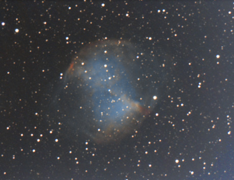
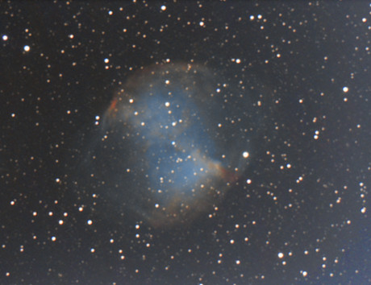

Couple facile composé de deux étoiles jaunes brillantes. L'une des deux est elle même double, mais le couple est beaucoup plus difficile (seulement 0.9" d'écart actuellement) et reste un challenge pour un télescope de 200 mm.
| - printemps - | - été - | - automne - | - hiver - |
Couple facile composé de deux étoiles jaunes brillantes. L'une des deux est elle même double, mais le couple est beaucoup plus difficile (seulement 0.9" d'écart actuellement) et reste un challenge pour un télescope de 200 mm.

Couple composé de deux étoiles blanches identiques, un peu dans le style de Gamma Ari.

Visible à l'oeil nu - c'est même l'astre le plus brillant de la constellation (magnitude globale 3,1). Très beau dans une paire de jumelles ou à travers un instrument de très courte focale, déborde du champ de la plupart des télescopes plus importants.

Étoile variable de type Delta Scuti, qui varie suffisamment rapidement pour permettre une observation de sa période complète en moins d'une nuit. Réalisable aux jumelles. Dommage que son amplitude ne soit pas plus importante (cela dit, les Delta Scuti ont en général une amplitude bien plus faible).

Très belle étoile double, dans le style d'Albiréo : une jaune brillante, une bleutée moins brillante, toutes deux bien écartées.

Galaxie ronde assez facile, non loin de la tête de l'Hydre.

Le plus lointain amas globulaire appartenant à notre Galaxie. Et encore : il est fort possible que ce soit un amas globulaire vagabond, c'est-à-dire lié à aucune galaxie, mais passant simplement par là. Facile à observer dans un 200 mm (grâce à une magnitude de surface brillante), il est probablement impossible à résoudre dans un instrument amateur.
Étoile double assez serrée juste au nord d'Alpha (si Bayer avait désigné une étoile Bêta dans la constellation, ce serait elle.)
Très belle galaxie vue presque par la tranche, de brillance de surface assez élevée. Relativement méconnue du fait qu'elle appartient à une constellation peu marquante (cela dit, je préconise de la repérer à partir des étoiles du Cancer).
Très bel amas globulaire, comparable à M2 ou M15, facilement résolu en étoiles dans un télescope de 200 mm, mais moins riche que M13.
Deux étoiles jaunâtres brillantes et bien écartées.
Galaxie super géante, au centre d'un amas de galaxie très lointain (Abell 2199). Ce monstre est faiblement visible dans un télescope de 115 mm et c'est peut-être l'objet le plus lointain accessible à un tel instrument (à moins que ce soit 3C 273, encore plus faible ?)
L'une des plus anciennes étoiles variables connues. Ses variations sont perceptibles à l'oeil nu.

Le plus célèbre des amas globulaires. Ce n'est pourtant que le n°7 dans le classement des amas globulaires les plus brillants. Le plus brillant visible à nos latitudes est M22 (le n°3), et les autres sont des objets du ciel austral. M13 se résout facilement en étoiles dans un télescope de 200 mm, du moins sous un ciel transparent. Le nombre d'étoiles résolu augmente très vite avec la qualité du ciel ; une vingtaine sous un ciel péri-urbain, une cinquantaine à la campagne, presque cent si la transparence est exceptionnelle. Certaines de ses principales étoiles s'alignent en arc qui donnent à l'amas une silhouette caractéristique, avec quatre arcs formant une sorte de croix aux branches courbes. Ne pas hésiter à grossir.
Petite galaxie allongée non loin de M13 qui présente la particularité de montrer une étoile d'avant plan tout près de son noyau, ce qui donne une allure de noyau double (cela dit, je n'ai jamais observé cette particularité en-dessous de 250 mm).
Très petite nébuleuse, très brillante, qui peut être confondue avec une étoile. Un filtre UHC aide à observer une légère extension. Je la trouve assez moche au 200 mm, mais il faut avouer que c'est un des objets les plus brillants du ciel : elle est sans doute visible sans problème en ville.
Petit amas globulaire non résolu dans un 200 mm, visible sous forme d'une simple tache floue ronde.
L'une des plus belles étoiles doubles du ciel : une white brillante, une bleue un peu plus faible. Un grossissement important est conseillé.
Deux étoiles blanches brillantes et assez serrées.
Deux étoiles brillantes, de même éclat.

Amas ouvert étendu, composé d'étoiles brillantes, très intéressant à petit diamètre. L'amas est plus dense dans la région centrale. Grossir fait déborder l'amas du champ mais permet de détecter plusieurs étoiles doubles.
Étoile double relativement serrée et inégale. L'étoile principale est jaune.
Galaxie relativement brillante, digne d'un Messier, allongée, surtout en vision décalée. Appartient au même groupe de galaxies que NGC2835.
Grande galaxie à faible brillance de surface. Appartient au même groupe de galaxies que NGC2784.
Étolile double très contrastée, avec un compagnon bien plus faible mais assez éloigné.
Galaxie vue par la tranche, très longue, mais à très faible brillance de surface. C'est une galaxie relativement proche, située juste à l'extérieur du Groupe Local dont elle fait peut-être partie. Elle nécessite un ciel noir. Je n'ai vu que la partie centrale, très faible et allongée.
Petite nébuleuse planétaire annulaire, verdâtre, comparable à NGC2392 ou NGC7662. Son étoile centrale est accessible à un télescope de 200 mm.
Galaxie elliptique relativement brillante, allongée.
Galaxie étendue, mais de faible brillance de surface. Sa position très australe n'aide pas.
Forme un duo de galaxies avec NGC3923, à 35' sud-ouest de NGC3923. Semblable à sa voisine, en plus faible.
Galaxie principale d'un groupe situé légèrement plus loin que l'amas Virgo. Forme un duo de galaxies avec NGC3904. Légèrement allongée, présente un noyau stellaire.
Amas globulaire peu condensé. Le télescope de 200 mm montre une nébulosité ronde, plutôt brillante, granuleuse. L'amas n'est pas résolu, mais on y est presque. Peut-être l'est-il depuis le sud de la France ?
Galaxie elliptique à peu près ronde, membre le plus brillant d'un trio de galaxies avec NGC5078 et 5101.
Membre d'un trio avec NGC5061 et 5101, elle est située à 40' sud-est de NGC5061.
Membre d'un trio de galaxies avec NGC5061 et 5078, situé à 25' est de NGC5078. Sa brillance de surface est faible.
Étoile variable de type mira, la plus brillante du ciel (lorsqu'au maximum) après Mira Ceti. À l'oculaire, l'étoile est bien rouge.
Deuxième galaxie la plus brillante du ciel de printemps après M81, mais très basse sur l'horizon à nos latitudes. C'est la principale galaxie d'un groupe proche du Groupe Local dont les autres membres sont situés dans la constellation du Centaure (notamment la fameuse Centaurus A). Au 200 mm, M83 est relativement brillante, avec un petit noyau presque stellaire et un disque qui s'affaiblit vers l'extérieur et se perd peu à peu dans le fond du ciel. Elle est encore plus étendue en vision décalée.
Un des plus lointains amas globulaires de notre Galaxie. Amas faible, mais avec une brillance de surface assez élevée, non résolu en étoiles.
Petite galaxie au sud de Denebola.
L'une des plus belles galaxies "oubliées" du catalogue Messier, peut-être la plus belle de la constellation. Elle montre déjà sa silhouette au télescope de 200 mm, et on devine une sorte de petite barre au centre, qui est l'amorce du système spiral. Une cible de choix pour les astrophotographes également.
L'une des plus anciennes étoiles variables connues. Sa forte amplitude permet de repérer facilement ses variations.
Galaxie centrale d'un groupe de quatre galaxies, avec NGC3193, NGC3185 (faible) et NGC3187 (très faible). Son allongement est bien visible. Pour voir les deux autres galaxies, il ne faut pas hésiter à grossir un peu plus.
L'autre galaxie principale du groupe de NGC3190. C'est une petite elliptique ronde et compacte, que l'on peut confondre avec un étoile à faible grossissement.
Une des plus fameuses étoiles doubles du ciel, à voir même avec une petite lunette. Les deux composantes ont des couleurs proches, jaune ou jaune-white.
Galaxie de Seyfert. Au télescope, elle est assez brillante et allongée, et l'on peut chercher son compagnon, NGC3226 (magnitude 11.4), presque collé à la première.
L'une des trois Messier du groupe M95-96-105. C'est une spirale barrée vu de face, en forme de thêta, très photogénique. Visuellement, il ne faut pas compter observer sa structure de spirale barrée au 200 mm.
L'autre grande spirale du groupe M95-96-105, non barrée cette fois. Son léger allongement est bien visible.
Membre du groupe M95-96-105, située plus au nord.
La grande galaxie elliptique du groupe M95-96-105. Elle forme un trio avec NGC3384 et NGC3389. À peine plus brillante que NGC3384, elle se reconnaît à sa forme presque ronde.
Membre du groupe M95-96-105, voisine de M105. Dans un petit instrument, elle forme avec M105 un duo de galaxies presque aussi brillantes, mais de formes différentes : elle est allongée, contrairement à sa voisine. NGC3389, plus faible (Mag=11.9), est accessible à un télescope de 200 mm.
Autre membre du groupe M95-96-105, au nord de M105.
Deux étoiles brillantes, blanches, bien séparées à fort grossissement même avec un petit diamètre.
Membre périphérique du groupe M95-96-105, allongée, assez brillante.
Deuxième galaxie la plus brillante de la constellation (avec NGC2903), plus brillante que bien des galaxies du catalogue Messier, et pourtant méconnue ! Facile, brillante, allongée, à tenter même avec un petit diamètre.
Membre principal du groupe de galaxies situé au nord de Thêta Leo, qui ne contient que des elliptiques et des lenticulaires. Visible dans le même champ que NGC3605 (la plus faible), NGC3608 et NGC3599 (plus à l'écart).
Compagne de NGC3607, un peu moins brillante et plus petite.

Membre du groupe M65-66, à peine moins brillante que M66, très allongée, symétrique. Elle ressemble un peu à M31, en beaucoup plus petite.
Membre apparent du groupe NGC3607, situé un peu à l'écart. En fait, son décalage vers le rouge indique que la galaxie est deux fois plus éloignée.
Membre principal du groupe M65-66 et galaxie la plus brillante de la constellation. Sa silhouette est déjà perceptible dans un télescope de 200 mm, mais sans révéler sa structure spirale.
La plus grande galaxie du groupe M65-66, mais vue par la tranche et de faible brillance de surface, donc difficile sous un ciel médiocre. Sa forme évoque celle de NGC4565 et son allongement est impressionnant, mais seule la vision décalée permet de voir toute l'étendue de la galaxie. Si le ciel est très bon, la bande d'absorption se devine.
Galaxie isolée au sud de la constellation, brillante, ronde et petite.
Petite galaxie ronde juste à l'est d'Alpha Lyn.
Superbe spirale photogénique vue de face, relativement brillante, mais qui ne montre pas sa structure avec 200 mm de diamètre. Deux étoiles se projettent sur le disque (ce ne sont pas des supernovas...)
Très belle galaxie en fuseau fin et légèrement courbé. Sa magnitude indique une galaxie plutôt faible, mais sa brillance de surface est favorable.
Galaxie brillante, ronde, étendue. C'est une galaxie de Seyfert. Elle possède un compagnon plus faible, à 45'E : NGC3510 (Mag=12.1), une petite galaxie très allongée.
Suffisamment brillante pour figurer dans le catalogue Messier (si Ch. Messier était passé par là), c'est une galaxie vue par la tranche dominant un groupe de galaxies qui contient aussi le couple NGC3166-3169. Au télescope, elle est bien contrastée et présente une forme typique en fuseau, fin, symétrique.
Galaxie voisine de NGC3169, située à 8' est. Au télescope de 200 m, on ne voit que son bulbe, rond, et une condensation centrale plus brillante. Son disque, beaucoup plus faible, s'étend loin vers l'est et l'ouest de la galaxie mais n'a pas été vu. Pas plus que la petite galaxie satellite NGC3165 (magnitude 14.0).
Galaxie voisine de NGC3166, située à 8' ouest. Visuellement, elle est légèrement allongée.

Forme un duo avec NGC4278 à 20' sud. Grande galaxie allongée presque dans la direction est-ouest.

La plus brillante d'un groupe de galaxies relativement riche nommé Coma I. Ce groupe est relativement proche (numéroté G13 dans la liste de De Vaucouleurs). NGC4278 forme un duo avec NGC4274 à 20' nord. Galaxie petite, relativement brillante, parfaitement ronde. NGC4283 (magnitude 12.1) est située tout près, à 3.5' nord-est.

Spirale barrée appartenant au groupe Coma I. Visuellement, elle ne montre que sa région centrale : le bulbe et la barre, ce qui lui donne un silhouette allongée (alors qu'elle est vue de face).

Visible à l'oeil nu comme une tache floue lorsque le ciel n'est pas assez noir, il se résout en une douzaine d'étoiles sous un très bon ciel - le nombre d'étoiles visibles est un bon moyen d'estimer la transparence. C'est un objet à voir à l'oeil nu ou éventuellement avec de petites jumelles.

Galaxie du groupe Coma I, relativement facile, légèrement allongée.

Galaxie légèrement allongée avec un noyau brillant.

Située à pile 2° nord de NGC4565, relativement brillante, allongée, évoque un gros bulbe entouré d'un petit disque. On commence à deviner sa forme irrégularière. Les détails demandent encore un peu plus de diamètre.

Voici la plus belle des galaxies à travers un 200 mm (selon moi). C'est un immense fuseau allongé dans la direction est-ouest, qui s'étend loin du bulbe. Celui-ci possède une petite région centrale brillante et on devine le début de la bande d'absorption qui travese le nord-est du bulbe. C'est exactement la silhouette des photos ! Elle possède deux compagnons, NGC4562 à 13' sud-ouest (magnitude 13.7) et NGC4555 à 30' nord (magnitude 12.9).

Très belle spirale barrée sur les photos. Visuellement, on devine sa barre au milieu d'un disque faible, mais les bras ne sont pas visibles. Sa petite voisine NGC4712 (magnitude 12.8, à 12' ouest) est en arrière-plan : elle est quatre fois plus lointaine.

Galaxie relativement brillante, évidente, elle se présente sous la forme d'une grosse masse elliptique sans bulbe vraiment marqué, avec une toute petite région centrale assez lumineuse. La zone sombre qui lui vaut son surnom, une sorte de tache noire juste au nord du noyau, est devinée sous un bon ciel (elle est moins difficile que la bande d'absorption de NGC4565).

L'une des deux elliptiques géantes au coeur du gigantesque amas Coma, alias Abell 1656 (c'est l'« amas Coma » de galaxies, pas d'étoiles comme Melotte 111). À l'oculaire, c'est juste une petite tache floue parfaitement ronde.

L'autre elliptique géante au coeur de l'amas Coma. À l'oculaire, elle est un petit peu plus brillante que sa voisine et légèrement allongée. Les autres galaxies de l'amas sont nettement plus faibles, mais très nombreuses.

Amas globulaire relativement lointain, à la limite de résolution au 200 mm en rase campagne. C'est une nébulosité ronde, plus brillante au centre, facile mais sans étoiles. Ses principales étoiles sont de magnitude 14-15 : il manque quelques dixièmes de magnitude (il est partiellement résolu au 300 mm).

Amas globulaire faible et très peu condensé. Il est nettement plus faible que M53, mais presque aussi étendu que lui. La région centrale est légèrement plus dense et baigne dans une pâle nébulosité sans forme précise.

Galaxie lenticulaire vue par la tranche, la principale d'un groupe relativement riche, mais composé de galaxies peu brillantes.

Une autre galaxie du groupe de NGC4111, moins allongée.

Galaxie irrégulière proche du Groupe Local, mais de faible brillance de surface. Difficile en visuel.

Oh la belle étoile double ! C'est une mini-Albiréeo : A est jaune or, B est bleutée.

Voici une très belle galaxie vue par la tranche, mais qui demande un bon ciel. Elle est étonnemment longue et allongée !
Cette galaxie est l'une des rares qui révèle sa structure spirale (en vision décalée et pas en entier) dans un 300 mm. Pour un 200 mm, est-ce possible ? Peut-être sous un ciel de montagne ? On notera alors que les bras ne sont pas complètement symétriques. Quoiqu'il en soit, c'est une belle galaxie brillante, deux fois plus longue que large, avec un petit noyau rond.

Voici sans doute la galaxie irrégulière la plus facile à observer (dans notre ciel boréal). C'est une galaxie brillante à la forme un peu rectangulaire. Il semble y avoir comme deux bulbes à l'intérieur.

Galaxie brillante facile à pointer tout près de Chara. Elle possède un compagnon proche de magnitude 11.9 : NGC4485. Les deux galaxies sont orientée dans des directions perpendiculaires.

Cette galaxie forme un coupe intéressant avec NGC4625 (mag=12.4), accessible à un télescope de 200 mm sous un bon ciel.

Cette galaxie, parfois surnommée « la Baleine », est l'une des trois ou quatre plus belles galaxies pour un télescope de 200 mm. Non seulement elle est brillante en magnitude globale, mais de plus elle a une brillance de surface élevée. Elle aurait sûrement pu être cataloguée par Messier si celui-ci était passé dans les parages. Elle montre à l'oculaire une grande nébulosité contrastée, très étendue et allongée, à la forme asymétrique et particulière. Vraiment une forme bizarre. Son noyau est décentré, et la galaxie est plus brillante d'un côté que de l'autre. Je lui trouve des points communs avec M82. Juste au nord, un petit compagnon peut être observé avec un télescope de 200 mm, NGCNGC4627 (mag=12.4).

Quelle drôle de galaxie ! Peut-être la plus bizarre du ciel ? Parfois surnommée la « Crosse de hockey », elle est constituée de deux portions brillantes (NGC4656 proprement dite et NGC4657, qui est peut-être une petite galaxie entrée en collision) et d'une longue « queue » très faible du côté opposé.

C'est une étoile carbonée, rouge. Elle est nettement plus brillante en lumière visible que sa magnitude photographique pourrait laisser croire (moyenne de 5.4). Son indice de couleur est en effet très élevé.

Cette galaxie est assez déroutante : son noyau est minuscule et très brillant, son bulbe est petit, rond et brillant, ce qui pourrait évoquer une sorte de petit amas globulaire compact. Le tout est entouré d'un vaste halo nettement plus faible, le disque.

L'une des étoiles doubles les plus connues, dédicacée aux possesseurs de petites lunettes. Le contraste de couleur n'est pas évident : A est bleutée, B peut-être jaunâtre.

Galaxie brillante, allongée, avec un petit noyau presque stellaire.

Galaxie voisine de NGC5005, un peu moins brillante mais un peu plus étendue, elle aussi allongée.

Galaxie brillante mais sans détails dans un télescope de 200 mm.

La plus célèbre galaxie de la constellation est en interaction avec NGC5195. Lord Rosse a découvert visuellement sa structure spirale. Elle est à la portée d'un télescope de 300 mm sous un ciel de plaine, peut-être d'un 200 mm en haute montagne ? En plaine, on n'y détecte que l'enroulement et éventuellement des portions de bras, mais pas la structure complète (je parle pour moi en fait).

Le petit compagnon de M51, situé en réalité légèrement en arrière, montre une barre orientée nord-sud.

Attention : étoile double difficile à petite ouverture, qui peut servir de test. Les deux sont blanches, A étant peut-être un peu jaunâtre. (Remarque : elle est notée STF 1768 sur le Pocket Sky Atlas.)

L'un des trois grands amas globulaires du ciel boréal de printemps avec M5 et M13, il ouvre la saison des amas globulaires; Il est un peu plus condensé que M13 mais plus petit et moins riche. Un télescope de 200 mm montre déjà plusieurs dizaines d'étoiles.

Galaxie principale du groupe compact de galaxies Hickson 68. Elle est un tout petit plus brillante que NGC5350 (Mag=11.3) et NGC5354 (Mag=11.4). Les deux autres galaxies du groupe sont NGC5355 et 5358 (Mag=13.3 et 13.7), probablement trop faibles pour un 200 mm. Les trois galaxies principales sont blotties près d'une brillante étoile jaune-white qui gêne l'observation.

Galaxie proche du groupe Hickson 68, légèrement allongée, avec un petit bulbe rond.
L'une des deux galaxies (celle au nord) formant l'un des plus célèbres couples de galaxies en interaction. Son surnom est dû aux deux bras qui s'étendent très loin de part et d'autre des deux galaxies, bras très faibles réservés à la photographie.
L'autre galaxie du couple (celle au sud). Au télescope de 200 mm, on voit deux gouttes d'eau accolées qui n'ont pas la même direction.
Nébuleuse annulaire assez faible, ronde, dont l'anneau n'a pas été vu au télescope de 200 mm. Un filtre UHC ou OIII aide
Paire montrant un contraste d'éclat entre l'étoile brillante, blanche, et son compagnon white.
Couple très contrasté, l'étoile principale, blanche et éclatante, étant bien plus brillante que sa discrète compagne.
Couple formé de deux étoiles blanches bleutées.
Cette étoile est en général de magnitude 5.7, facile à trouver à 2° nord de Delta CrB. Mais elle peut connaître des chutes d'éclat imprévisibles et sa magnitude descend parfois jusqu'à presque 15, la rendant invisible même au travers de télescopes de 200 mm.
La plus célèbre des novae récurrentes, formée d'une géante rouge et d'une naine blanche qui aspire régulièrement une partie de la matière de la géante, pouvant causer une explosion (éruption). T CrB a connu deux éruptions en 1866 et 1946, et on attend la prochaine pour 2026.
Très bel amas globulaire, presque aussi spectaculaire que M13 et aussi facilement résolu, il est par contre plus condensé, et contient une sorte de petit noyau très brillant. Certaines de ses étoiles s'alignent en arcs de cercle. Noter une étoile double juste à côté : 5 Ser (5.1 et 10.1 à 11.4").
Galaxie ronde, assez faible.
Étoile double relativementserrée, brillante, avec deux composantes blanches.
Amas globulaire non résolu, peu condensé.
Amas ouvert compact formé d'étoiles relativement brillantes, mais peu nombreuses.
Nébuleuse faible, mais qui réagit bien aux filtres UHC et OIII, grâce auxquels on peut distinguer sa forme d'aigle (plus ou moins...) Il contient un petit amas ouvert au niveau de la "tête" de l'aigle.
Amas ouvert relativement riche, étendu et formé d'étoiles pas trop faibles, à observer de préférence avec un instrument de très courte focale ou même aux jumelles.
Étoile double facile, avec deux composantes brillantes de même éclat, blanches.

Variable semi-régulière carbonée. Elle possède un décalage vers le rouge très élevé (près de 5 magnitudes) et présente à l'oculaire une teinte rouge-vif surprenante.

Cet objet est un quasar, le noyau ultra-lumineux d'une galaxie lointaine. C'est le plus brillant quasar du ciel. Pourtant ce n'est pas un des plus proches : il est brillant parce qu'il est monstrueux, c'est un des plus lumineux de l'univers. La plupart des galaxies présentées dans cette section appartiennent au superamas Virgo et sont à environ 40 millions d'années-lumières. 3C 273 est à plus de 2 milliards d'années-lumières ! Au télescope, on ne voit qu'un point : une étoile de magnitude 12,9 perdue au milieu d'étoiles semblables (en apparence).

Galaxie spirale vue par la tranche, très longue, très fine, comme un fin fuseau, avec une étoile galactique d'avant-plan assez brillante juste au nord du bord du fuseau. Elle possède un faible compagnon, NGC4517 A (magnitude 12,5) à 17' nord. Elle fait partie du groupe de M49.

Forme un couple avec NGC4536, à 30' sud. Ce sont deux galaxies allongées un peu à l'écart de l'amas Virgo. NGC4527 est un peu plus brillante et un peu plus allongée que sa voisine.

Forme un couple avec NGC4527, à 30' nord. Elle est encore plus étendue que sa voisine, mais un peu plus faible.

Petite galaxie assez brillante, allongée, avec un petit noyau brillant

Galaxie lenticulaire géante, la plus brillante de la constellation, en périphérie de l'amas Virgo. Facile à pointer à partir du Corbeau, dont elle est proche de la frontière. Vue presque par la tranche, elle montre bien son fin fuseau et son bulbe, moins épais à première vue qu'en photo, ainsi qu'un petit noyau brillant. La vision décalée permet d'apprécier tout le bulbe et, peut-être, de détecter la fine bande d'absorption qui la traverse.

Un des couples les plus intéressants du ciel. Ses composantes sont deux étoiles identiques, de même éclat et de même teinte (jaune pâle). Elle était facile à séparer à la fin du siècle dernier, avec ses deux composantes alignées est-ouest, mais celles-ci se sont rapprochées au point de sembler fusionner au début des années 2000. Aujourd'hui (après 2010) le couple est revenu facile, cette fois dans la direction nord-sud. C'est parce que son orbite est à la fois rapide (169 ans) et très excentrique : les deux composantes, d'éclat semblable, étaient distantes de seulement 0,4" au périastre en 2005, tandis qu' aujourd'hui la séparation dépasse les 3" et continue à augmenter. L'apoastre aura lieu en 2090 à 7".

Elliptique géante semblable à M87, mais avec une magnitude de moins (néanmoins elle pourrait être cataloguée Messier), entourée d'une multitude d'amas globulaires parfaitement inobservables en visuel. Légèrement allongée, elle est quand même moins nettement moins évidente que M87.

Située à seulement 45' sud de NGC4636, dont elle semble plus brillante grâce à sa magnitude de surface. Presque ronde.

Parfois désignée NGC4664 (les deux désignations se réfèrent au même objet). Ronde, plus faible que ses voisines NGC4636 et 4643. Il y a une étoile de magnitude 11 (environ) juste au sud-ouest.

Encore une galaxie suffisamment brillante pour avoir pu figurer dans le catalogue de Messier (si Ch. Messier l'avait vue). C'est une grande elliptique allongée, entourée de nombreux amas globulaires (invisibles à l'oculaire), au centre d'un riche groupe de galaxies (avec NGC4731 et 4775 notamment). À l'oculaire, elle est relativement brillante mais ne montre rien qu'un petit noyau quasi stellaire et une décroissance d'éclat régulière vers l'extérieur.

Galaxie brillante, relativement petite, légèrement allongée.

Galaxie lenticulaire allongée à 40' de NGC4902.

Située à 40' sud-ouest de NGC4856 mais deux fois plus proche de nous, c'est une magnifique spirale en thêta avec de multiples bras, très photogénique, mais plus faible que sa voisine.

Couple contrasté, formé d'une étoile blanche, brillante, et d'un compagnon nettement plus faible. En fait, l'étoile principale est elle-même une binaire spectroscopique.

Galaxie située à 50' nord de NGC5084, mais nettement plus proche de nous. Les photos montrent son aspect bizarre : il y a une petite barre entourée de nombreuses portions de bras. Attention : c'est une galaxie à faible brillance de surface.

Galaxie lenticulaire située à 1,5° nord de Gamma Hya, vue par tranche, sorte de Sombrero plus faible et beaucoup plus fin. C'est la galaxie principale d'un groupe qui comporte aussi NGC5087 (magnitude 11,4 mais nettement plus facile que NGC5068) et 5134 (magnitude 11,3).

Spirale photogénique, vue de face, présentant deux bras principaux asymétriques et deux bras secondaires, assez similaire à M74. Visuellement elle est plutôt faible, ronde, et les bras se sont pas visibles à 200 mm.

La plus brillante galaxie d'un groupe qui contient plusieurs objets accessibles à un télescope de 200 mm. C'est aussi celle qui a la plus haute brillance de surface. Hormis NGC5364 (v. ci-dessous), les autres galaxies sont plus faibles que la magnitude 12.

Deuxième galaxie du groupe de NGC5363. Spirale photogénique avec deux bras qui s'enroulent sur plusieurs tours. Elle contraste avec sa voisine aussi par sa brillance de surface nettement plus faible.

Galaxie la plus brillante d'un groupe qui contient plusieurs objets accessibles à un télescope de 200 mm. C'est une spirale vue presque par la tranche qui possède deux compagnons, NGC5560 (magnitude 12.4) et NGC5569 (magnitude 13.2).

Galaxie elliptique faisant partie du groupe de NGC5566, à 40' sud. Comme NGC5566, elle possède deux petits compagnons : NGC5577 à 10' nord (magnitude 12.6) et NGC5574 à 3' sud-ouest (magnitude 12.4).

Amas globulaire relativement lointain, assez facile mais non résolu dans un télescope de 200 ou 300 mm.

Très belle galaxie vue par la tranche, semblable à NGC4565 avec laquelle elle rivalise presque. Proche de 109 Vir (qu'il faut sortir du chapmp), elle est longue et fine, et sa bande d'absorption est détectable à travers un télescope de 300 mm. C'est la principale galaxie d'un groupe qui comporte notamment NGC5740 (magnitude 11.9).

Elliptique massive à 35' sud-ouest de 110 Vir. À 20' nord-ouest est située NGC5806 (magnitude 11.7).

Galaxie principale d'un groupe de galaxies regroupées autour de 110 Vir (au moins une dizaine sont accessibles à un télescopde de 200 mm). C'est une elliptique massive située au milieu d'une chaîne de quatre galaxies proches mesurant 25' de long : NGC5839 (magnitude 12.7), NGC5845 (magnitude 12,5), NGC5846 et son satellite 5846A, juste au sud du coeur de NGC5846 (magnitude 11,9) et NGC5850 (spirale barrée photogénique « en thêta » de magnitude 10.8). D'autres galaxies sont situées autour de cette chaîne : NGC5831, 5838, 5854...
Petit amas globulaire, c'est l'intrus galactique de cette région. Ses étoiles les plus brillantes sont de magnitude 15, aussi il n'a pas été résolu au télescope de 200 mm, qui montre l'image typique : une petite nébulosité ronde, assez facile, condensée.
Une des plus faibles galaxies de Messier. Elle a la particularité de présenter un décalage vers le bleu. C'est parce que cette galaxie, qui fait bien partie de l'amas Virgo, orbite très rapidement autour du coeur de l'amas, et actuellement se dirige vers nous à une vitesse qui compense l'éloignenement dû à l'expansion. Visuellement, elle est étendue, très allongée, effectivement plus faible que les autres galaxies Messier. Son centre est petit, rond.
(Les données sont présentées dans l'ordre des numéros NGC.) Très joli couple de galaxies qui garde l'entrée ouest de l'amas Virgo. La principale est NGC4216, la plus brillante. Elle est vue par la tranche et ressemble à la célèbre NGC4565 (en un peu plus faible). Au 200 mm, elle montre un bulbe à peu près rond, et s'étendu très loin de part et d'autre de ce bulbe. Sa bande d'absorption a été perçue au 300 mm mais pas au 200 mm. NGC4206 est bien plus faible, mais de silhouette semblable, et presque allongée dans la même direction. Une autre voisine, NGC4222 (magnitude 13.3), elle aussi vue par la tranche, est située à l'opposé de NGC4206 et forme un trio remarquable, mais n'a pas été vue au 200 mm (elle apparaît au 300 mm).
Très belle spirale vue de face ayant la particularité d'avoir trois bras principaux. Son décalage vers le rouge est le double du décalage moyen de l'amas Virgo pour une raison similaire à M99 (mais à l'envers) : cette galaxie s'éloigne de nous dans sa course autour du coeur de l'amas, éloignement qui s'ajoute à celui de l'expansion. Au télescope de 200 mm, la galaxie est brillante, ronde, étendue, et on perçoit sa silhouette même si on ne distingue pas les bras (comme pour M51). Il y a une étoile jaune brillante au nord-est de la galaxie.
Galaxie principale d'un groupe de galaxies situées juste derrière l'amas Virgo. Plutôt brillante, à peu près ronde. Possède un compagnon à seulement 4' est, NGC4264 (magnitude 12.9), qui n'a pas été vu au télescope de 200 mm.
Galaxie ronde ayant la particularité d'avoir une toute petite région centrale brillante et un disque bien plus étendu, mais bien plus faible.
Galaxie allongée présentant un centre quasi stellaire et un bulbe allongé.
Superbe couple serré, mais faible. En réalité c'est un couple optique. NGC4298 est une spirale légèrement allongée, tandis que NGC4302 est une spirale vue par la tranche, un peu plus faible et plus étendue. Leur silhouettes dissemblables sont parfaitement reconnaissables à l'oculaire.
Deuxième plus grande spirale de l'amas Virgo après M100, elle en garde l'entrée sud. Au 200 mm elle est relativement brillante, étendue, et laisse deviner en vision décalée sa barre, orientée à peu près nord-sud.
La plus grande spirale de l'amas Virgo, dont elle garde l'entrée nord. Elle est presque vue de face et montre sur les photos un superbe enroulement de deux bras principaux et plusieurs bras secondaire. Visuellement, c'est une grande nébulosité presque ronde relativement brillante, avec un petit noyau brillant. M100 possède plusieurs galaxies satellites, très faibles, comme NGC4322 (magnitude 14.0) et NGC4328 (magnitude 13.3). Plus loin, à 18' sud-ouest-sud, on trouve NGC4312 (magnitude 11.7), accessible à un 200 mm : c'est une galaxie assez facile en forme de fuseau très allongé.
(Les données sont rangées dans l'ordre des numéros NGC.) Duo de galaxies facilement visibles au 200 mm, situé à environ 1° de M100, séparées de seulement 6'. Elles sont de diamètres semblables, mais NGC4340 est légèrement allongée, tandis que NGC4350, qui possède un noyau presque stellaire, est vue par la tranche.
Galaxie brillante qui, par sa magnitude, aurait pu faire partie du catalogue Messier. Grosse boule floue relativement brillante, ronde, avec un bulbe peu marqué. Fait penser à un amas globulaire peu condensé et non résolu.
Forme avec M86, NGC4388, NGC4435-38, NGC4458-61, NGC4473 et NGC4477-79 la chaîne de Markarian. Galaxie ronde relativement brillante à l'oculaire, jumelle de M86.
M85 (données de la première ligne) est une grande galaxie lenticulaire accompagnée, à 8' est, de la petite spirale barrée presque vue de face NGC4394 (données de la seconde ligne). Au télescope de 200 mm, M85 est plutôt brillante et étendue, légèrement allongée, avec un noyau stellaire. Sa voisine est bien plus faible.
Galaxie assez faible, très allongée, qui forme un triangle presque équilatéral avec M84 et M86. Au milieu de ce triangle, on peut apercevoir NGC4387 (magnitude 12.1), faible et plus petite. Au sud-est de ce triangle apparaissent NGC4413 (magnitude 12.5) et NGC4425 (magnitude 11.8).
Forme avec M86, NGC4388, NGC4435-38, NGC4458-61, NGC4473 et NGC4477-79 la chaîne de Markarian. Cette chaîne n'est pas un alignement fortuit de galaxies mais bel et bien un objet physique. M86 est ronde, relativement brillante, elle montre un centre brillant et un disque où l'éclat décroît progressivement vers l'extérieur. La galaxie NGC4402 (magnitude 11.8) est visible à 10' nord, allongée.
Galaxie plutôt brillante, possédant un centre rond au milieu d'un bulbe peu marqué, et un disque allongé dans la direction est-ouest.
Couple de galaxies en interaction gravitationnelle au milieu de la chaîne de Markarian. La plus brillante est NGC4438, c'est aussi la plus étendue et la plus allongée. Elle possède une petite région centrale au milieu d'un disque plus faible. NGC4435 a un disque nettement plus faible que son bulbe.
Grande galaxie lenticulaire allongée est-ouest, relativement brillante, facile, étendue, avec un bulbe bien marqué. Elle est entourée de plusieurs galaxies visibles dans le même champ, les principales étant NGC4417 (magnitude 11.1, elle aussi très allongée), NGC4424 (11.7, faible, allongée est-ouest) et NGC4380 (11.7, un peu plus étendue que les deux précédentes), visibles au 200 mm.
Galaxie spirale située à 1°20' sud-est de M85. Elle est un peu plus faible que M85 mais facile, allongée nord-sud, avec un bulbe rond.
NGC4459 est une galaxie lenticulaire légèrement allongée (direction est-ouest) située à 2' nord-ouest d'une brillante étoile rouge. Elle est accompagnée, à 15' est, d'une galaxie nettement plus faible, NGC4474. Entre les deux, mais tout près de NGC4474, se trouve NGC4468, de magnitude 12.8, que je n'ai pas vue au 200 mm.
Couple de galaxies dans la chaîne de Markarian, juste à l'est des Yeux (NGC4435-38). La plus brillante est NGC4461, qui montre un noyau presque stellaire entouré d'un disque faible allongé dans la direction nord-sud. NGC4458 est nettement plus faible, ronde et sans détails.
Cette galaxie fait partie de la chaîne de Markarian, à l'endroit où elle déborde sur la Chevelure de Bérénice. Elle est allongée dans la direction est-ouest.
Elliptique géante, c'est la plus brillante des galaxies de l'amas Virgo (mais M87 est la plus massive). C'est aussi la première galaxie de l'amas découverte par Messier. Elle est entourée de milliers d'amas globulaires. Elle possède plusieurs galaxies satellites pouvant être vues au 200 mm : NGC4470 (magnitude 12.5), NGC4464 (12.5), NGC4492 (12.6) et NGC4488 (12.2). Au télescope de 200 mm, M49 est une grande boule floue ronde, semblable à un amas globulaire peu condensé et non résolu. Elle ressemble à sa voisine (au sud-ouest) NGC4365, mais en plus brillante.
Située à l'extrémité nord-est de la chaîne de Markarian, NGC4477 est une spirale barrée vue de face. Au télescope, elle est de dimension et d'éclat semblable à NGC4473, l'avant-dernière de la chaîne, mais est à peu près ronde. Elle possède un compagnon nettement plus faible, NGC4479, en théorie accessible à un télescope de 200 mm mais que je n'ai pas vu (vu au 300 mm).
La galaxie centrale de l'amas Virgo, la plus grande et la plus massive. C'est une elliptique géante entourée de milliers d'amas globulaires. Le télescope montre une nébulosité pas tout à fait ronde (elle est légèrement allongée dans la direction nord-sud), brillante, avec un petit noyau bien marqué, dont l'éclat s"affaiblit peu à peu vers l'extérieur. Dans le même champ sont visibles deux satellites, NGC4476 (magnitude 12.2) et NGC4478 (magnitude 11.4), qui forment un duo situé à environ 10' ouest de M87. Il existe d'autres galaxies satellites plus faibles.
Grande galaxie spirale à environ 1,5° nord-est de l'extrémité est de la chaîne de Markarian. Elle contient de nombreux bras (comme NGC3521 du Lion). Visuellement, c'est une galaxie allongée, facile, avec un bulbe brillant entouré d'un disque étendu et allongé.
Galaxie lenticulaire située à 30' sud de NGC4535. Elle est brillante (plus que NGC4535), nettement allongée (mais de forme elliptique et non pas en fuseau), avec une petite zone centrale ronde.
Belle spirale barrée vue de face, possédant deux bras principaux et plusieurs bras secondaires, située à 30' nord de NGC4526. Visuellement, c'est une galaxie faible mais relativement étendue. Elle ne montre pas de forme précise, mais est légèrement allongée dans la direction nord-sud. Il y a une petite étoile juste au bord sud de la galaxie.
Très belle étoile double formée d'une composante white brillante et d'un compagnon bleuté un peu plus faible.
Très belle spirale barrée photogénique, symétrique, une des plus faibles galaxies de Messier. Contrairemant aux spirales barrées typiques, ses bras ne partent pas de l'extrémité de la barre, mais de la région centrale. Visuellement, c'est une grande galaxie brillante, avec un bulbe marqué et un disque allongé (est-ce la barre ?) au milieu d'un faible halo qui s'étend relativement loin en vision décalée.
Galaxie elliptique presque circulaire, se présentant à l'oculaire comme une vaste nébulosité ronde, relativement brillante, avec une étoile faible juste sur le bord est. Elle est plus brillante au centre et s'affaiblit progressivement vers l'extérieur, mais sans montrer de structure (bulbe ou noyau).
Étonnant couple de galaxies spirales en interaction gravitationnelle. Visuellement, elles font penser aux Antennes, NGC4038-39 dans le Corbeau (mais la photo ne montre pas d'antennes). Au 200 mm elles sont faibles et séparées difficilement en vision décalées. (Au 300 mm, leur silhouette évoque une huître ou une moule ouverte.) La galaxie NGC4564 (magnitude 11.1) est visible à 12' nord des Siamoises. À l'oculaire elle paraît d'ailleurs plus brillante. Visible dans le même champ, c'est une galaxie allongée dans la direction nord-est/sud-ouest. Signalons la présence de l'étoile double STF 1661 à 7' ouest de NGC4564 (deux étoiles de magnitude 9.2 séparées de 2.3").
Spirale photogénique formée de deux bras principaux symétriques. À l'oculaire d'un 200 mm, elle est relativement brillante, très étendue et allongée. Elle fait penser à la galaxie d'Andromède, en plus petite.
Galaxie spirale semblable à la nôtre, se présentant au télescope de 200 mm comme une nébulosité relativement brillante, très légèrement allongée dans la direction est-ouest, avec un bulbe plus brillant entouré d'un disque étendu.
Couple de deux lenticulaires barrées semblables, vues de face, situées à 20' l'une de l'autre, juste à l'ouest de l'étoile Rhô Vir. Faciles à 200 mm, la plus brillante étant NGC4596, deux fois plus étendue que sa voisine et légèrement allongée. NGC4608 est plus petite, ronde, toute proche de Rhô Vir.
Groupe de galaxies, toutes accessibles à un télescope de 200 mm. M59 et M60 sont facilement visibles. M59 est légèrement allongée dans la direction nord-sud. M60 est la plus grande et la plus brillante, à peu près ronde. Aucune des deux ne montre de région centrale, juste une décroissance progressive de luminosité vers l'extérieur. Juste à côté de M60, presque collée sur le bord nord-ouest (à seulement 2.5' du centre) apparaît la petite NGC4647, ronde, uniforme. NGC4638 forme un triangle presque isocèle avec les deux Messier. Elle est un peu plus facile que NGC4647, en forme de fuseau allongé. NGC4660 est à environ 20' sud-est de M60, elle aussi allongée, mais pas dans la direction est-ouest. On pourra aussi chercher le couple NGC4606-4607 à 20' nord-ouest de M59 (magnitudes 11.8 et 12.8).
Couple de galaxies situé à 1,5° nord du groupe M59-M60. NGC4639 est la plus facile (malgré sa magnitude plus faible), légèrement allongée, sans détails. NGC4654 est un peu plus faible, mais un peu plus grande.
Spirale inclinée, photogénique (ses bras s'enroulent sur plusieurs tours), à la périphérie de l'amas Virgo. Visuellement, elle est légèrement allongée, et montre une petite zone centrale plus brillante.
Très joli couple de galaxies qui garde l'entrée est de l'amas Virgo. Distantes de 10', elles sont relativement brillantes et facilement visibles au 200 mm. Mais elles ne se ressemblent pas : NGC4754 est légèrement allongée, avec un bulbe rond et un disque un peu plus faible, tandis que NGC4762 est très allongée, avec un noyau presque ponctuel au milieu d'un petit bulbe allongé.

Spirale vue de face, parfaitement ronde. Elle évoque une nébuleuse planétaire avec son petit centre brillant, presque stellaire, et son large halo plus faible.

Joli couple contrasté, assez serré. Les deux étoiles sont blanches, la principale étant bien plus brillante que sa discrète compagne.

Galaxie elliptique allongée dans la direction est-ouest, avec une petite région centrale brillante. Elle forme le noyau d'un groupe de galaxies contenant notamment NGC2742 (magnitude 11.4) et NGC2654 (magnitude 11.8).

Cet objet aurait pu être catalogué par Messier. Galaxie spirale brillante, formée de nombreux bras, elle a abrité plusieurs supernovae. Attention : il y a une étoile galactique à l'extrémité nord-ouest, ce n'est pas une supernova ! L'étoile brillante au nord-est est white.

Galaxie appartenant au groupe de M81. C'est une galaxie plutôt faible, allongée.

Galaxie relativement brillante, légèrement allongée dans la direction nord-sud. C'est une galaxie photogénique, avec des bras fins s'enroulant sur plusieurs tours. D'autres galaxies sont visibles dans les parages : NGC3027 (magnitude 11.8 mais une faible brillance de surface), NGC3065 (12.5) et NGC3066 (12.9) notamment.
Galaxie principale d'un groupe de galaxies, le plus proche du Groupe Local après le groupe du Sculpteur (voir NGC253). M81 et M82 sont visibles dans le même champ à faible grossissement et forment un des couples de galaxies les plus célèbres du ciel. M81 est plus étendue que sa voisine et allongée (moins que M82). Deux étoiles doubles sont visibles juste au sud de la galaxie.


Galaxie irrégulière perturbée par son rapprochement avec M81 (dont elle s'éloigne à présent). Bien contrastée, c'est une des plus belles galaxies du ciel, peut-être la plus belle à travers un télescope de 200 mm (avec NGC4565) où elle montre déjà des détails. De brillance de surface élevée, elle semble plus brillante que M81.

Galaxie vue par la tranche, assez faible, très allongée.

Galaxie appartenant au groupe de M81. Elle est à peu près ronde, plutôt brillante.

Cette spirale vue de face possède de multiple bras et est très photogénique. Sa brillance de surface est assez faible cependant. Visuellement, c'est une nébulosité plutôt faible, parfaitement ronde avec une petite zone centrale plus brillante.

Spirale barrée allongée, avec une petite région centrale brillante.

Spirale vue de face, avec deux bras asymétriques.

Spirale barrée à faible brillance de surface.

Naine rouge, aussi appelée Gliese 411, c'est l'étoile la plus proche du Soleil après le système Alpha Centauri, l'étoile de Barnard et Wolf 359. Des planètes ont été découvertes autour de cette étoile.

Spirale vue presque par la tranche, facile même à travers un instrument de petit diamètre, allongée est-ouest. Une faible étoile galactique est située tout près de son centre et fait office de « faux noyau ». Le 200 mm la montre dissymétrique et sa surface est granuleuse.

Nébuleuse assez faible, ronde et sans détail. Elle forme un joli couple avec M108, visible dans le même champ à faible grossissement. L'étoile centrale, de magnitude 16 d'après les catalogues, serait un peu moins faible, mais je ne l'ai pas vue dans un 200 mm.

Étoile double serrée, l'une des deux orbitales les plus faciles à étudier (pour les observateurs de l'hémsiphère nord) avec 70 Oph: sa période n'est que de 60 ans. Elle est formée de deux étoiles jaunes semblables au Soleil. L'écartement et l'angle de phase donnés ici sont ceux de 2005. Mais l'écart augmente et le compagnon tourne vers l'est. En 2022 la séparation est de 2.5" et l'angle de phase atteint 200°.

Principale galaxie de la portion nord d'un vaste groupe nommé Ursa Major, formé de galaxies situées dans la région de Phecda (la portion nord s'appelle Ursa Major N). C'est une spirale à bras multiples vue de face.

Spirale possédant de nombreux bras, allongée, elle montre une petite région centrale entourée d'un vaste disque faible.

Spirale barrée à la forme particulière avec ses deux bras opposés qui s'éloignent de la galaxie, de faible brillance de surface, elle fait partie du groupe Ursa Major. Elle forme un couple de galaxies en interaction avec NGC3729 (magnitude 11.4) située à un peu plus de 10' est.

Grande spirale photogénique de faible brillance de surface. C'est une des principales galaxies du groupe Ursa Major Sud.

Spirale composée de deux bras principaux, symétriques. Elle possède un faible compagnon à 4' sud-est : NGC3896, de magnitude 13,5. Elle aussi fait partie du groupe Ursa Major Sud.

Superbe spirale aux bras multiples, visuellement elle est plutôt faible (sa brillance de surface est daible), parfaitement ronde, avec un petit centre brillant.

Galaxie lenticulaire, facile mais sans détails sinon son noyau plus brillant.

Spirale barrée photogénique à bras multiples. Elle se présente comme une nébulosité allongée assez sembable à M109 (petit noyau brillant, disque nettement plus faible), peut-être un petit peu plus brillante.

Belle spirale barrée, photogénique, elle se présente comme une faible nébulosité avec, en son centre, un noyau ponctuel brillant et un disque nettement plus faible.

Galaxie lenticulaire très allongée dans la direction nord-sud.

Galaxie de Seyfert. Au télescope, c'est une galaxie presque ronde avec un petit noyau brillant. Elle fait partie du groupe Ursa Major Sud.

Située à 1° sud-est de NGC4026, c'est une galaxie allongée, avec un faible compagnon à 12' sud : NGC4085 (magnitude 12.4), elle aussi allongée. Ces deux galaxies ne sont probablement pas liées.

Spirale barrée très inclinée, elle présente une zone centrale allongée, peu contrastée, et un disque tout aussi allongé.

Peut-être le couple le plus célèbre du ciel boréal. Les deux étoiles sont blanches et facilement séparées. Mizar forme aussi, à l'oeil nu, un couple optique avec Alcor (magnitude 4.0), situé à près de 12'. La visibilité d'Alcor dépend de la transparence du ciel.

Galaxie principale d'un groupe qui contient notamment NGC5308 (magnitude 11.4), NGC5389 (12.0) et NGC5376 (12.1). Elle présente une petite zone centrale ronde et brillante, et son disque s'étend assez loin vision décalée.
Une des galaxies les plus célèbres du ciel, superbe spirale vue presque de face présentant plusieurs bras, mais de très faible brillance de surface. Visuellement, elle est encore plus difficile que M33. C'est un grand disque étendu sans limites précises, bien plus facile si le ciel est noir. L'enroulement en "S" est néanmoins perceptible sous un bon ciel.

Spirale bizarre (son disque s'étend bien plus loin au sud qu'au nord) faisant partie du groupe de galaxies de M101. Faible et ronde, son asymétrie est visible à l'oculaire.

Grande galaxie faible ne montrant pas de détails. Elle aussi fait partie du groupe de M101.

Cette faible étoile double fut trouvée par Charles Messier alors qu'il cherchait une nébuleuse rapportée se trouver dans le voisinage (à tort), par l'observateur du 17ème siècle Johann Hevelius. Selon la description donnée dans son catalogue, Messier ne vit aucune nébulosité associée à ce couple, mais, ayant mesuré sa position, il lui attribua un numéro dans son catalogue.
Étoile double serrée juste au nord d'Alpha 1-2.
Célèbre étoile double optique, bien visible aux jumelles. L'un des deux composantes a une teinte jaunâtre.
Une curiosité : cette étoile variable varie en seulement un peu plus de 2 heures. Mais l'amplitude est plutôt faible.
L'une des plus brillantes binaires à éclipses, du même type qu'Algol. Ses éclipses durent environ 12h50m : l'étoile n'est alors pratiquement plus visible à l'oeil nu (tout dépend de la transparence du ciel).
Amas globulaire très peu condensé, l'un des plus brillants et faciles de ce type. Le télescope de 200 mm montre une nébulosité de forme indéfinie, un peu plus brillante au centre, et laisse deviner une dizaine d'étoiles très faibles en vision décalée (à condition de grossir suffisamment).

Galaxie spirale situé près de la frontière avec la Vierge.

Amas globulaire peu condensé, faible, situé sur le chemin qui mène d'Arcturus à M3 qui est d'un tout autre calibre.

Deux étoiles blanches faciles à séparer. Un faible grossissement permet d'observer dans le même champ un autre couple, plus écarté : Iota Boo (magnitudes 4,8 et 7,4 séparées de 40").

Un des plus célèbres couples du ciel, mais difficile à apprécier dès que le ciel s'agite. En l'absence de turbulence, ce sont deux joyaux lumineux, l'un jaune-white, l'autre bleu, qui méritent le nom de Pulcherrima (« la plus belle ») attribué par Struve, qui l'a découverte.

Couple facile à séparer. L'étoile principale est jaune, son compagnon white. Il y a en fait d'autres composantes plus faibles à plusieurs minutes d'arc autour des deux étoiles principales.
Cette étoile double relativement serrée est associée à une très belle nébuleuse à réflexion (IC 4604) réservée uniquement à la photographie.
Étoile double serrée et orbitale (deux blanches). L'écartement maximal a été atteint en 2007 et va à présent diminuer et atteindra 0,4" vers 2070. Période de 129 ans. Les éléments donnés ici sont ceux de 2010.
Petit amas globulaire pas très brillant pour un Messier, granuleux. Il faut un 300 mm pour le résoudre.
Amas globulaire voisin et jumeau de M10 - tous deux sont les plus beaux de la constellation avec M62. En fait, il faut un 200 mm pour commencer à les différencier. Celui-ci contient alors environ vingt-cinq étoiles très faibles, comme M10, mais il est un peu plus condensé et son centre n'est pas résolu.
Amas globulaire assez faible, moins condensé que les autres, non résolu. Il me fait penser à une galaxie vue de face plutôt qu'un amas globulaire.
Amas globulaire voisin et jumeau de M12. Il est aussi brillant et aussi étendu que M12, et un 200 mm montre lui aussi environ vingt-cinq étoiles. Mais il est un peu moins condensé et des étoiles sont visibles jusqu'au centre. La différence serait plus flagrante avec 300 mm de diamètre, au travers duquel M10 est sensiblement plus beau que M12.
L'un des trois plus beaux amas globulaires d'Ophiuchus, malheureusement trop bas à nos latitudes pour être apprécié. Dans un 200 mm il est condensé, à la limite de résolution : des étoiles sont devinées à la limite.
Amas globulaire qui commence tout juste à être résolu dans un 200 mm.
Amas globulaire faible et peu condensé.
Amas globulaire typique, moyennement brillant mais non résolu.
Petit amas globulaire, facile mais non résolu.
Petite nébuleuse planétaire possédant un centre brillant, seul perceptible en vision directe. Elle est allongée.
Petit amas globulaire facile, non résolu mais granuleux.
Très joli couple formé de deux étoiles identiques jaune-or. C'est une orbitale de période 471 ans (j'ai indiqué les éléments pour 2010). L'apoastre sera atteint dans les années 2080 à 5,6".
Amas globulaire petit et très condensé, mais non résolu.
Couple coloré white et jaunâtre, facile.
Amas globulaire résolu en une vingtaine d'étoiles au télescope de 200 mm.
Étoile double assez difficile en raison du contraste d'éclat entre les deux composantes.
Petit amas globulaire pas trop faible, assez condensé.
Le plus brillant des amas globulaires NGCde la constellation (au point que la première fois, j'ai cru avoir pointé M9 par erreur). Un peu plus petit que M9, granuleux mais non résolu.
Amas globulaire assez faible, non résolu.
Petite nébuleuse annulaire ronde, sans détail au 200 mm. Un diamètre plus grand est nécessaire.
Un intrus dans cette constellation spécialisée en amas globulaires : une galaxie située derrière la Voie Lactée, pas trop faible, étendue et allongée. Elle ne montre pas de détail sinon son bulbe bien marqué.
Amas globulaire plutôt brillant, granuleux mais non résolu.
Petit amas globulaire avec un noyau presque stellaire.
Amas ouvert assez pauvre, très étendu, réservé aux instruments de courte focale ou aux jumelles.
L'une des plus célèbres novae récurrentes. Selon l'AAVSO, on ne connaît que sept étoiles de ce type (la plus célèbre étant probablement T CrB). Précédentes éruptions : 1933, 1958, 1967, 1985. La prochaine devrait être pour bientôt...
Étoile rouge. La plus proche étoile après Alpha Centauri et ses compagnes, et celle qui a le plus rapide mouvement propre apparent du ciel : 10,3"/an (dans la direction PA 356°). Effectuez deux dessins à quelques années d'intervalle : cela suffit pour détecter le mouvement propre.
Amas globulaire faible et non résolu.
Je crois que c'est la plus facile des orbitales du ciel boréal (sinon c'est Ksi UMa). Elle est en effet à la fois assez écartée (car proche) et assez rapide (période de seulement 88 ans). Notez précisemment la direction des deux composantes par rapport aux étoiles voisines et il suffira de recommencer quelques années plus tard pour mettre en évidence leur révolution. Le couple montre aussi de belles couleurs : jaune-white et white. J'ai indiqué ici les éléments pour 2010 - l'écartement augmente.
L'une des nébuleuses planétaires les plus brillantes du ciel en terme de magnitude de surface (il n'y a pas mieux dans le ciel boréal à part quelques nébuleuses d'aspect stellaires). Toute petite nébuleuse - même à fort grossissement - de teinte bleu-vert, très brillante, allongée. Elle évoque un citron vert.
Pour moi, le plus bel amas ouvert du ciel d'été au-dessus de l'équateur céleste pour un instrument de petit diamètre. Ses étoiles brillantes forment un arc de cercle et se détachent très bien de la Voie Lactée.
Une des plus brillantes mirae du ciel. Elle est en permanence accessible à un petit instrument. Dans un 200 mm elle montre très bien sa couleur rouge.
Ksi Scorpii est formée de deux étoiles, la plus brillante (A) jaunâtre et l'autre (B) blanche. En réalité A est elle même double, mais son écartement n'atteint jamais la seconde d'arc. Dans le même champ, on trouvera STF 1999 (à 5' sud-est), deux étoiles jaunes de magnitude 7.5 et 8.1.
Un des couples vedette du ciel d'été, formé de deux étoiles blanches bleutées, toutes deux éclatantes, surtout la principale.
La "double double" du Scorpion. Les deux étoiles principales, A et B, forment un couple serré, et sont accompagnées d'une deuxième paire d'étoiles située à 41" nord. De magnitudes 7.0 et 7.8, elles sont séparées de 2.4". Les quatre étoiles sont de type spectral B. Ce système quadruple est difficile à apprécier à nos latitudes car toujours bas sur l'horizon − pour ma part je n'ai jamais réussi à dédoubler A-B et l'ai vu seulement triple.
Nébuleuse planétaire faible et uniforme, sans détail. Un filtre UHC ou OIII aide à bien distinguer son disque.
Amas très compact (tout le contraire de M4 !), non résolu au télescope de 200 mm.
L'une des deux étoiles qui entourent Antarès, celle-ci à sa droite (ouest). Le couple est très contrasté. Les deux composantes orientées dans la même direction que celles d'Antarès, mais l'écartement est bien plus important. À noter que l'étoile A est elle même double, elle possède un compagnon (noté 'a' ) de magnitude 5.2 à seulement 0.5".
Le plus proche amas globulaire du Soleil, facile à résoudre en étoiles (c'est le seul amas globulaire résolu par Ch. Messier). Il n'est pas très condensé et pourrait presque passer pour un amas ouvert. Certaines étoiles s'alignent en une barre verticale très reconnaissable. Le nombre d'étoiles observées dépend de la transparence du ciel, et en particulier de la latitude de l'observateur. Un télescope de 200 mm en montre une cinquantaine depuis le sud de la France.
Amas étendu avec une zone centrale plus dense, montrant une vingtaine d'étoiles (depuis le sud de la France).
Situé à seulement 40' nord-ouest d'Antarès, cet amas globulaire est, comme M4, peu condensé. Mais sa distance est cinq fois plus grande. Il est faible et non résolu au télescope de 200 mm.
Amas globulaire condensé, mais faible, non résolu en étoiles.
La seule supergéante rouge de l'association Sco OB2, dont les principales étoiles sont des supergeantes bleues, donc la prochaine étoile qui explosera en supernova. Elle possède un compagnon plus faible, difficile à séparer à nos latitudes en raison de sa faible hauteur, qui brouille les images. Au télescope, lorsque le couple est séparé, l'image montre une étoile white éclatante et, tout proche, une petite étoile blanche moyennement brillante.
Voici l'une des merveilles du ciel austral, l'un des plus beaux amas ouverts de la voûte céleste. NGC6231 est un amas riche et compact, très dense, semblable à l'un des amas du Double Amas, mais avec des étoiles encore plus brillantes. Mais cet objet magnifique ne peut pas être correctement apprécié même depuis le sud de la France. Le télescope de 200 mm montre une quinzaine d'étoiles brillantes, serrées, mais bouillonnantes, au nord du couple optique Dzêta 1-2 (magnitudes 3.6 e 4.8). Une cascade d'étoiles faibles jaillit de l'amas vers le nord, et rejoint l'amas Collinder 316, bien plus étendu et moins spectaculaire.
Amas ouvert bien détaché du fond stellaire, qui semble allongé dans la direction nord-sud. Il y a une étoile white au sud de l'amas.
Petit amas bien détaché, formé d'étoiles relativement brillantes, en forme de quadrilatère. L'étoile brillante au nord-ouest du quadrilatère est une double écartée (HJ 4915).
Petite nébuleuse planétaire faible, ronde et uniforme.
Nébuleuse planétaire bipolaire, facile au 200 mm où elle se présente comme une nébulosité très allongée, avec un centre plus brillant et deux extensions de part et d'autre. Un filtre UHC ou OIII aide à préciser sa forme particulière.
Couple facile formé de deux étoiles brillantes, surtout la principale, mais très très bas sur l'horzon, et parfaitement invisible depuis le nord de la France.
Un des plus amas ouverts du ciel, le plus beau du ciel d'été à travers un instrument de petit diamètre (surtout depuis le sud de la France). Déjà superbe à travers des jumelles, où ses étoiles dessinent bien la forme du papillon, il est suffisamment petit pour rentrer entièrement dans le champ du télescope de 200 mm même à moyen grossissement. L'étoile la plus brillante, sur le bord est, montre une teinte white.
Amas bien détaché mais formé d'étoiles faibles.
Amas voisin de M6 (à 50' est), de même taille, mais nettement plus faible. C'est un amas riche comportant une soixante d'étoiles (depuis le sud de la France).
Petit amas condensé, bien détaché du fond stellaire de la Voie Lactée, comportant une vingtaine d'étoiles plutôt brillantes.
Amas globulaire brillant mais dont l'observation est rendue difficile par la présence, à seulement 4' est, de l'étoile G Sco (géante rouge de magnitude 3.2). Au 200 mm, il se présente sous la forme d'un disque nébuleux plus brillant au centre, relativement brillant, non résolu mais granuleux. G Sco, éclatante à côté de l'amas, est de couleur white.
Amas ouvert partiellement résolu en une vingtaine d'étoiles très fables, serrées, devant un fond légèrement nébuleux. Le champ qui entoure l'amas est très riche en étoiles.
Grand amas ouvert formé d'étoiles brillantes, parfaitement visibles à l'oeil nu, semblable à M44. Il faut l'observer aux jumelles ou avec de petits instruments à grand champ, mais il reste intéressant au 200 mm grâce à sa richesse en étoiles. Il comprend une région centrale dense d'environ 30' de diamètre. En outre le télescope révèle plusieurs étoiles doubles.

Un amas ouvert fourni en étoiles assez brillantes.

Une étoile variable rouge dans le champ de la Voie Lactée, proche de Lambda Aql. La petite nébuleuse planétaire NGC6751 est située à 30' sud-est de cette étoile. La couleur de l'étoile est bien visible au télescope.

Amas ouvert assez étendu, qui contient plusieurs étoiles doubles.

Nébuleuse planétaire assez faible, ronde et plutôt étendue, et qui peut montrer quelques détails.

Jolie petite nébuleuse planétaire annulaire. L'anneau est-il perceptible dans un télescope de 200 mm ? À défaut, elle ne montrera qu'un disque rond, mais pas uniforme.

Nébuleuse obscure étendue, à observer à très faible grossissement sous un ciel noir, vue comme un espace noir en forme de "E".
Amas facile mais pauvre et sans grand intérêt.
Voici pour moi le plus bel objet du ciel profond d'été pour un diamètre de 200 mm. Avec ses deux étoiles brillantes semblant devancer le reste de l'amas, certaines étoiles formant un V pointant vers l'est, il est parfois surnommé « le vol de canards sauvages ». Mais la vision dominante est celle d'un amas rond, très riche et très dense. Ne pas hésiter à grossir.
Amas globulaire peu condensé qui aurait très bien pu figurer dans le catalogue Messier. Il commence tout juste à être résolu au 200 mm, montrant une dizaine d'étoiles très faibles sur fond granuleux. Il est légèrement allongé est-ouest.
Amas globulaire partiellement résolu, peu condensé, au milieu d'un champ très riche en étoiles.
La plus célèbre des étoiles carbonées. Son indice de couleur B-V atteint la valeur invraisemblable de +5,5 : elle est 150 fois plus brillante en lumière rouge qu'en lumière verte. À ma connaissance, c'est le record. (Pour donner une idée, l'indice de couleur de Bételgeuse n'est que de +1.5, celui de l'Étoile Grenat, dans Céphée, est de +2.2.)
Epsilon de la Lyre est une des étoiles multiples les plus célèbres du ciel. Le couple AB-CD, dont les éléments sont donnés ici (avec les magnitudes globales de AB et de CD), est observable aux jumelles et dans n'importe quel petit instrument à faible grossissement. Mais chacune des deux composantes est elle même double, et cela nécessite un plus fort grossissement. Normalement, un télescope de 200 mm doit les séparer. Par contre, ce n'est pas toujours évident à travers un instrument de petit diamètre, surtout si la qualité optique n'est pas tip top. Les deux couples sont presque perpendiculaires.
Le couple situé au nord. Magnitude globale 4.7. Ses deux composantes sont alignées presque dans la même direction que Epsilon 1-2. Les éléments donnés ici sont ceux de 2010.
Le couple situé au sud. Magnitude globale 4.6. Ses deux composantes sont alignées presque perpendiculairement à la direction de Epsilon 1-2. Les éléments donnés ici sont ceux de 2010.
Étoile double facile, écartée, pour les petits instruments.
Cette double facile et écartée est également une variable à éclipse. Ses éclipses se produisent tous les 12,9 jours et elle n'atteint plus que la magnitude 4,4.


La plus célèbre des nébuleuses planétaire montre très bien son anneau, sorte de rond de fumée semblant flotter parmi les innombrables étoiles de la Voie Lactée. Des détails sont visibles, notamment l'affaiblissement des anses.
Amas d'étoiles brillantes mais peu nombreuses. Adapté plutôt à un instrument de petit diamètre.
Étoile double optique, brillante et très écartée (adaptée aux jumelles), superbe grâce à ses couleurs rouge et bleue. Les deux étoiles encadrent l'amas Stephenson 1.
Étoile double facile au nord de Thêta.
Étoile double écartée au sud d'Êta, qui montre un contraste de couleur semblable à Albiréo : l'étoile brillante est white, son compagnon est bleu.
Amas assez brillant, semble un peu allongé, résolu en une dizaine d'étoiles.
L'une des plus brillantes céphéides du ciel (plus brillante en moyenne que Delta Céphée), à l'ouest de la "théière", tout près des pieds d'Ophiuchus.
Petit amas globulaire assez faible, intéressant surtout pour sa proximité avec la nébuleuse planétaire ci-dessous.
Petite nébuleuse planétaire située juste au nord de NGC6440, dans le même champ que lui. Plus petite que l'amas, mais plus brillante. Elle commence à monter sa structure dans un télescope de 200 mm.
Amas ouvert riche et condensé composé d'étoiles l'éclat moyen. Très intéressant dans un instrument de petit diamètre. Un diamètre plus important que 200 mm ne montre pas vraiment plus d'étoiles.
Nébuleuse célèbre mais plutôt faible, qui nécessite un bon ciel. Un télescope de 200 mm laisse deviner deux ou trois des lignes sombres qui sépare les "pétales" du trèfle, surtout avec un filtre interférentiel.
Voilà un objet étonnant ! C'est une petite trouée sombre à l'intérieur du fond laiteux de la Voie Lactée. Sans doute la plus facile des nébuleuses obscures, bien plus facile que la Tête de Cheval. J'ai vu la Tache d'Encre dans des jumelles 15x70 comme un tout petit point noir au milieu d'une région superbe de la Voie Lactée ; elle est cependant mieux visible avec un télescope, lequel peut grossir un peu plus. Le 200 mm permet de l'observer dans de bonnes conditions, mais un 130 mm suffit. La présence d'une éclatante étoile jaune juste sur le bord de la nébuleuse réhausse le spectacle. Attention ; la transparence du ciel est un élément capital. Depuis le nord de la France, où la nébuleuse émerge difficilement des crasses de l'atmosphère, elle est moins belle que depuis des latitudes plus méridionales.
Petit amas ouvert condensé composé d'étoiles faibles formant une sorte de couronne autour d'une étoile jaune-white brillante. L'amas est visible dans le même champ que la Tache d'Encre et fait partie du spectacle.
Un des nombreux amas globulaires de la constellation, situé tout près de Gamma Sgr. Il forme un couple avec NGC6528.
L'une des plus belles nébuleuses du ciel, même si sa faible hauteur (depuis nos latitudes) cause une absorption non négligeable de sa lumière. La nébuleuse est composée de deux parties principales, celle à l'ouest ayant une sorte de noyau très brillant surnommé "le Sablier". À l'est de la nébuleuse se trouve un amas ouvert, NGC6530, composé d'étoiles nées récemment dans la nébuleuse. Un filtre interférentiel pemet de mieux voir les extensions de la nébuleuse, notamment une troisième portion plus au nord, qui devient alors facile.
Amas ouvert voisin de M8, dont les étoiles ont été formées récemment à partir du gaz de la nébuleuse. Il n'y a plus de gaz dans cette région de M8 car il a été soufflé par le vent stellaire des étoiles les plus chaudes de l'amas.
Petit amas ouvert peu attractif situé tout près de M20. C'est cette proximité qui fait l'intérêt de l'amas.
L'une des plus brillantes céphéides du ciel, à seulement 50' nord de Gamma Sgr (d'ailleurs Gamma s'appelle plus exactement Gamma-2 et W, Gamma-1).
Le plus petit et le plus faible amas globulaire du couple NGC6522-6528.
Amas globulaire facile dans un 200 mm (mais non résolu en étoiles), situé non loin au sud-est de la Lagune.
Encore un amas globulaire, un peu au sud du précédent. Lui aussi est facile mais non résolu au 200 mm.
Nébuleuse planétaire assez étendue (pour son type) mais faible, qui nécessite un ciel transparent jusque bas sur l'horizon. À voir depuis une latitude méridionale.
Ce n'est pas un amas ouvert mais une région où l'absorption interstellaire est plus faible, ce qui permet d'observer un champ d'étoiles très dense. Superbe spectacle dans n'importe quel instrument à grand champ.
Petit amas ouvert lointain, dense, mais constitué d'étoiles faibles. Au 200 mm, un grossissement relativement important est nécessaire. L'amas est situé à l'intérieur de M24.
Petit amas ouvert peu intéressant, facile dans les petits diamètres.
Pour moi la plus belle nébuleuse du ciel d'été avec les Dentelles. Étonnament brillante (nettement plus que M8) en terme de brillance de surface. La forme de cygne (c'est son autre surnom) est facilement visible dans un télescope de 115 mm. Les extensions sont faiblement visibles dans un 200 mm, mais sont faciles avec un filtre interférentiel.
Amas globulaire situé tout près de Delta Sgr, assez brillant mais non résolu.
Amas globulaire facile, qui commence à se résoudre en un poignée d'étoiles dans un télescope de 200 mm.
Amas globulaire proche de Lambda Sgr, non résolu à l'exception d'un poignée d'étoiles périphériques très faibles dans un télescope de 200 mm.
Un des nombreux amas globulaires du Sagittaire, situé au sud de la "théière". Non résolu au 200 mm.
Amas ouvert composé d'étoiles brillantes et relativement nombreuses, plus dense vers le centre. Au centre de l'amas, l'étoile la plus brillante est multiple. S'apprécie mieux avec un grand champ.
Tout petit amas globulaire, assez facile, non loin de M22.
Amas ouvert isolé, au nord de la constellation, peu connu mais plutôt joli (relativement riche) dans un télescope de 200 mm, avec une étoile centrale triple.
Petit amas globulaire plutôt brillant, pas plus faible que son voisin M70.
Troisième au classement des amas globulaires les plus brillants (M13 n'en est que le 7è), M22 est aussi le plus beau des ams globulaires visibles depuis nos latitudes. Malheureusement, sa faible hauteur sur l'horizon nous fait perdre un peu en magnitude. Néanmoins, l'amas offre un très beau spectacle dans un télescope de 200 mm : des dizaines d'étoiles à l'intérieur d'un amas riche et légèrement allongé. La condensation centrale est moins marquée que dans la majorité des amas de ce type, ce qui permet de résoudre facilement le centre. On peut lui préférer M13 qui, bien qu'un peu moins riche, présente un aspect plus globulaire et symétrique.
Amas globulaire plutôt faible pour un Messier, mais très bas, sous la "théière".
Encore un amas globulaire... Petit, condensé, facile à observer, mais non résolu.
Voici un objet assez curieux... C'est un tout petit amas globulaire, assez facile, situé à seulement quelques minutes d'arc d'une étoile visible à l'oeil nu (Nu-2 Sgr), qui est jaune et éclatante au télescope.
Amas globulaire brillant, mais si bas, si bas ! On le pointe facilement à partir des étoiles de la Couronne Australe. Je pense qu'il doit être partiellement résolu en étoiles lorsqu'il monte plus haut que depuis la France. À nos latitudes, on se contentera d'une simple tachef floue...
Étoile du même type que R CrB : elle brille normalement à la magnitude 5,8 mais, de temps en temps, voit son éclat chuter de 8 magnitudes !
Grand amas ouvert facile, visible au chercheur, qui contient deux étoiles doubles écartées au nord.
Étoile double facile mais inobservable depuis la France, à l'extrême sud de la constellation.
Le deuxième plus bel amas globulaire de la constellation, après M22. À condition qu'il ne soit pas trop affecté par la crasse de l'atmosphère. Sous de bonnes conditions, il est de la même classe que M2 ou M92, c'est-à-dire qu'il montre plusieurs dizaines d'étoiles pas très serrées. L'amas surprend par son étendue.
Petite nébuleuse ronde étonnament brillante, qui laisse deviner un affaiblissement léger en son centre (mieux perceptible avec un filtre interférentiel), mais sans vraiment montrer sa structure annulaire.
Étonnant amas globulaire tout petit, très brillant, tout condensé. Aucune étoile n'est visible dans l'amas avec un télescope de 200 mm.

L'étoile polaire est une étoile double qui peut paraître difficile dans les petits instruments : ce n'est pas un problème d'écartement mais de contraste de luminosité, le compagnon étant nettement plus faible que l'étoile principale, qui est jaunâtre.

Galaxie spirale barrée, à tester dans de bonnes conditions.
Galaxie légèrement allongée contenant un bulbe bien marqué.
Galaxie allongée, assez brillante, avec un bulbe lui aussi allongé. La petite galaxie NGC4121 (magnitude 13,4) est visible à 4' S sous un très bon ciel (juste une petite tache ronde faible et uniforme).
Galaxie de brillance de surface très faible (pire que M33, pire que NGC2403 !), très étendue, très difficile. Sous un bon ciel, on détecte une large nuée floue très étendue et allongée, sans forme, mais qui ne semble pas tout à fait uniforme. Elle est très photogénique.
Petite galaxie elliptique typique, assez faible mais pas difficile.
Très belle galaxie relativement brillante, très allongée, avec un centre brillant.
Non loin de NGC5866, voici encore une galaxie relativement brillante et allongée, encore plus allongée que la précédente. Elle semble uniforme (pas de centre brillant) : juste une longue baguette nébuleuse, comme un tube à néon.
(Les données sont rangées dans l'ordre des numéros NGC.) Groupe de trois galaxies presque alignées. NGC5982 et NGC5985 sont deux galaxies assez faibles (la première un peu plus faible que la seconde), NGC5985 étant la plus grande des deux. Elles présentent toutes deux un allongement similaire, mais leurs orientations diffèrent. NGC5981 est une sorte de trait nébuleux très fin et très faible pointant vers une étoile du champ.
Couple présentant un fort contraste d'éclat. L'étoile principale est jaune-white.
(L'étoile la plus brillante est 17 Dra ; elle est en fait double et la magnitude indiquée ici est la magnitude globale du couple.) 16 et 17 Draconis sont deux étoiles blanches presque aussi brillantes l'une que l'autres formant un couple optique.
Étoile double assez serrée séparées perpendiculairement à la direction de 16-17 Dra.
Couple relativement serré, qui évoque un peu l'une des deux composantes de la Double-Double, mais avec des étoiles jaunâtres. L'écartement va augmenter peu à peu durant le vingt-et-unième siècle (ici ce sont les éléments pour 2010).
Couple optique formé de deux étoiles blanches identiques.
Couple facile formé de deux étoiles brillantes jaunâtres.
Galaxie relativement brillante, étendue, très allongée. Il n'y a pas de condensation centrale, juste une légère augmentation graduelle d'éclat vers le centre.
Petite nébuleuse planétaire de haute brillance de surface. Elle est facilement visible au chercheur, bien sûr stellaire. Un fort grossissement montre une sorte de patatoïde brillante un peu allongée, mais sans détails. Elle montre une teinte verdâtre. Je sais que l'étoile centrale est normalement visible dans un 200 mm, mais je ne l'ai pas vue...
Étoile double assez serrée formée de deux étoiles jaune-white et jaune.

Couple optique très écarté à réserver aux jumelles (ou au chercheur). Les deux étoiles sont jaunes. La plus brillante, Alpha-2, possède un très faible compagnon de magnitude 11.2 à 6.6". L'autre étoile a un compagnon plus facile car plus écarté (magnitude 9.6, à 46.0").

Encore un couple optique très écarté pour les jumelles. La plus brillante étoile est jaune.

Galaxie faible, légèrement allongée.

Amas globulaire condensé mais non résolu, à l'exception de quelques étoiles très faibles en périphérie. Il devient bien plus intéressant dans un 300 mm.

La plus célèbre des étoiles doubles, sans doute l'une des plus belles. Dans un télescope de 200 mm, les couleurs sont évidentes.
Amas ouvert petit et condensé, assez riche, un peu moins intéressant que NGC6819.
Pour moi le plus bel amas ouvert de la constellation. Étoiles faibles, mais nombreuses et serrées.
Petite nébuleuse planétaire étonnamment brillante, qui n'offre pas la même image selon qu'on l'observe en vision directe (zone centrale) ou en vision décalée (extensions), d'où une impression de clignotement si l'on alterne les deux façons de regarder. Son étoile centrale est brillante.
Étoile double écartée, facile.
Étoile variable de type Mira qui présente la particularité d'avoir la plus grande amplitude connue. Elle est difficile à pointer (au minimum) !
Bel amas ouvert, avec une trentaine d'étoiles assez serrées, autour d'une sorte de "barre". Il y a trois petits groupes d'étoiles autour, comme des satellites.
Amas ouvert composé d'étoiles faibles, mais assez riche. Demande un bon ciel.
Amas ouvert pas tellement spectaculaire, centré autour de deux étoiles multiples.
Amas pauvre et peu intéressant, composé de quelques étoiles brillantes, facile même dans un petit diamètre.
Amas plutôt pauvre mais composé d'étoiles brillantes, facile même dans un petit diamètre.
Galaxie faible, proche de l'amas ouvert NGC6939 (dans Céphée), qui a la particularité de connaître de fréquentes explosions de supernovae. Très photogénique. La qualité du ciel est primordiale pour l'apprécier.
Faible nébuleuse longue et très mince, très difficile. Avec un filtre UHC ou O-III (surtout O-III), elle se transforme en l'un des plus beaux objets du ciel profond : une nébuleuse filamenteuse facile, presque brillante, de part et d'autre de l'étoile double 52 Cygni. Sous un bon ciel, on peut apprécier le dédoublement du filament principal au nord de l'étoile.
Faible nébuleuse difficile, allongée, de forme vague. Tout change à nouveau avec un filtre UHC ou O-III (surtout O-III), qui montre une nébuleuse facile, formée de filaments, plus grande que la précédente. Deux autres petites nébulosités faibles sont visibles, sous un très bon ciel, entre les deux Dentelles : NGC6974-79 et le Ruban Triangulaire de Pickering.
Nébuleuse très étendue, facile à détecter avec un filtre UHC, difficile sinon. Réclame un faible grossissement. La partie sud est, de loin, la plus facile. Au nord-ouest, dans la nébuleuse, on peut repérer l'amas ouvert NGC6996, pas très riche.
Très belle étoile quadruple, écartée, avec une composante principale brillante et de teinte légèrement bleutée.
Très belle nébuleuse planétaire, ma préférée dans la constellation ! Elle a une forme particulière, allongée, avec deux lobes, l'un plus grand que l'autre. Peu de nébuleuses planétaires montrent des détails dans un télescope de 200 mm ; c'en est une.
Nébuleuse planétaire assez brillante, petite, allongée.
Célèbre étoile double, la première étoile dont on ait mesuré la distance. Les deux composantes ont une belle couleur jaune-or.
Petite nébuleuse planétaire très brillante, sans détails, allongée.
Faible nébuleuse planétaire ronde, assez étendue, uniforme. Le filtre UHC ou O-III est très utile.
Étoile triple assez écartée, facile. La principale est blanche.

Grand amas ouvert assez pauvre, composé d'étoiles très brillantes. S'apprécie mieux à très grand champ. Visible à l'oeil nu sous un bon ciel.
La plus facile des novae naines, accessible à un télescope moyen même à son minimum. Difficile à pointer, dans un champ très riche de la Voie Lactée. Ses éruptions ne sont pas aléatoires mais peuvent intervenir de façon irrégulière, même si une période moyenne se dessine.
Très petite nébuleuse planétaire, lumineuse, qui nécessite un fort grossissement pour être vue. Cela dit, l'effet de clignotement est visible à plus faible grossissement (elle disparaît presque en vision directe et réapparaît en vision décalée) et la trahit inmanquablement. Un 200 mm est un peu petit pour la détailler.
Nébuleuse planétaire assez faible mais facile, ronde et uniforme, toute proche d'une étoile d'éclat moyen. Il faudra 300 mm de diamètre pour détecter son anneau.
Amas globulaire typique, facile mais non résolu. Il s'aligne avec trois étoiles d'éclat similaire.
Célèbre étoile double formée de deux étoiles jaunâtres. Noter dans le même champ, à 15' SO, un couple assez ressemblant, mais plus faible, STF 2725 (7.5 et 8.2 à 6.4").
Amas globulaire plus petit et plus faible que NGC6934, non résolu lui aussi. C'est un des amas les plus lointains de notre Galaxie.
Amas visible à l'oeil nu, qui montre aux jumelles ou à travers un instrument de très courte focale une poignée d'étoiles brillantes alignées selon l'image d'un cintre. Peu d'intérêt dans un télescope de focale moyenne ou longue.
 

Peut-être la nébuleuse planétaire la plus facile à observer du ciel. Elle est brillante, étendue, et montre dans un 200 mm à la fois sa forme en haltère et les deux extensions sur le côté. Un filtre interférentiel, très efficace, permet de mieux voir ces extensions. L'étoile centrale est accessible sous un bon ciel.
Amas ouvert facile dans un petit diamètre, montrant un groupe d'étoiles assez brillantes disposées en couronne, l'une d'elles étant l'étoile 20 Vul.
Un des plus beaux amas ouverts du ciel d'été, sous un bon ciel. Très riche, étendu, mais composé d'étoiles relativement faibles.

Belle étoile double située près de la frontière avec le Dragon.

Amas ouvert dense composé de nombreuses étoiles très faibles. Il fait penser un peu à un amas globulaire.

Petite galaxie légèrement allongée.

Étoile double montrant un contraste d'éclat entre ses deux composantes.

Étoile rouge.

Amas ouvert qui ne se détache pas tellement du fond de la Voie Lactée, formé de très faibles étoiles.

Amas ouvert formé d'étoiles brillantes, pas très riche mais compact. Il est intéressant même en cas de Lune ou de pollution lumineuse. Deux étoiles brillantes de l'amas sont doubles.

Couple facile à séparer situé au milieu du "carré" de Céphée.

Amas visible aux jumelles comme une petite nébuleuse ronde dans la Voie Lactée. Il contient plusieurs étoiles doubles.

Étoile double facile même dans les petits instruments. Un 200 mm montre sa couleur jaune, le compagnon étant bleuté. Delta Cephei est surtout connue pour être la plus célèbre des céphéides : elle varie de 3,5 à 4,4 en 5j.08h.48m.

Petite nébuleuse planétaire ronde, pas trop faible, montrant un centre plus brillant mais pas d'étoile centrale.

Amas ouvert mal détaché de la Voie Lactée, formé d'étoiles faibles se répartissant juste au nord-est d'une étoile double brillante (HJ 1810, 8.6 et 10.0 à 21"). Il y a une autre étoile double encore plus brillante à 6' O de la précédente (STT 480, 7.7 et 8.6 à 31").

Petit amas compact et allongé formé d'étoiles très faibles, à observer sous un ciel très transparent.

Belle étoile double formée d'une étoile brillante jaunâtre et d'un compagnon blanc.

Voilà la plus belle nébuleuse planétaire de Céphée et, selon moi, l'une des quatre ou cinq plus belles du ciel à travers un télescope de 200 mm. Quel dommage qu'elle soit si méconnue ! C'est la seule nébuleuse planétaire de notre hémisphère qui - à ma connaissance - montre à la fois son étoile centrale et son anneau avec ce matériel.

Amas ouvert très difficile, formé d'étoiles très faibles et à peine détaché du fond stellaire. C'est un des plus vieux amas ouverts de la Galaxie : son âge est estimé à environ 10 milliards d'année.
Galaxie ronde contenant un centre brillant. Une galaxie plus faible est visible à 6' NO, juste à l'est d'une étoile brillante : NGC2276, de forme allongée.
Vaste amas ouvert modérément riche, assez bien détaché.
Autre amas ouvert étendu, un peu moins détaché que le précédent. L'étoile la plus brillante, au centre, est double.
Étoile double écartée et facile, avec une étoile brillante jaune orangée.
Couple très contrasté en éclat : l'étoile principale est très brillante, blanche jaunâtre, et son compagnon est beaucoup plus faible.
Galaxie brillante, ronde, facile.
La plus brillante galaxie de la constellation, sorte de M31 mais vingt fois plus éloignée. Accompagnée de très faibles galaxies d'arrière-plan, dont le Quintette de Stéphan (à la limite de visibilité d'un 200 mm).
Galaxie lenticulaire vue par la tranche, forme un couple esthétique avec NGC7339 : les deux galaxies ont la même forme, mais ni la même longueur, ni la même direction d'allongement ni le même éclat.
Faible compagnon de NGC7332, lui aussi vu par la tranche, sorte de jumeau de NGC7332 orienté différemment et plus faible.
Petite galaxie ronde assez brillante.
Étoile variable à très courte période ! L'amplitude est faible mais sans doute suffisante pour que des maxima et des minima soient observés.
Couple facile, écarté, montrant un contraste de couleur : la primaire est white et le compagnon est bleuté.
L'une des deux galaxies géantes de l'amas lointain Pegasus 1, distant d'environ 150 millions d'années-lumières.
L'autre galaxie géante de l'amas lointain Pegasus 1. Une poignée de galaxies plus faibles sont peut-être acessibles à un télescope de 200 mm sous un très bon ciel.
Belle spirale barrée photogénique. Sa barre est perceptible visuellement.
Galaxie lenticulaire vue presque par la tranche, semblable au Sombrero (M104), mais en plus faible.

Amas globulaire relativement lointain, facile à voir mais non résolu dans un télescope de 200 mm.

Petite nébuleuse planétaire très brillante, qui montre une couleur verte caractéristique. Son étoile centrale est visible, mais sans doute pas (à 200 mm) ses deux barres qui lui donnent une allure de Saturne ?

Amas globulaire très intéressant, l'une des dix plus beaux sous nos latitudes. Ses étoiles sont concentrées, un peu comme pour M15, le voisin du nord. Plusieurs dizaines résolues sous un bon ciel.

L'une des galaxies les plus brillantes de la constellation. Allongée, montre quelques détails de sa structure. Mais c'est en photographie qu'elle révèlera sa forme "en Saturne", due à son anneau interne.

Une étoile double colorée, la principale étoile étant jaune. Son compagnon semble bleu.

Étoile double orbitale (les éléments donnés sont pour 2002), composée de deux étoiles blanches identiques.

La nébuleuse de l'Hélice est probablement la nébuleuse planétaire la plus proche de nous. Très faible au premier abord, elle est nettement plus intéressante avec un filtre O-III (ou UHC), qui montre sa structure en anneau.

Étoile double colorée, l'étoile principale étant bleutée et le compagnon jaune.

Couple montrant un contraste de couleur : l'étoile principale est jaune et son compagnon paraît bleuté.

Une autre galaxie brillante et allongée. Observez le léger contraste entre le bulbe brillant et le disque plus faible.

Galaxie brillante accompagnée par une autre, NGC7723, de magnitude 11.2, à 45' sud. Le couple est vu ensemble dans un oculaire de longue focale. Voyez-vous une troisième galaxie ? (NGC7724, proche de NGC7727, n'est que de treizième magnitude.)

La nébuleuse de la boule de neige bleue ("blue snowball"), très brillante, mais petite. Essayez de détecter son étoile centrale et sa couleur particulière.

Un petit amas ouvert formé d'étoiles assez brillantes, bien que pas très nombreuses.

Galaxie elliptique étendue, très allongée, sans centre bien marquée. C'est l'une des deux galaxies satellites proches de M31.

Galaxie elliptique ronde, petite, brillante, avec un petit noyau très brillant. C'est l'autre satellite proche de M31. Attention de ne pas prendre M32 pour une étoile lors d'observation à faible grossissement.

La plus grande du Groupe Local, à environ 700 kpc de notre Galaxie. Immense, bien adaptée aux jumelles. Le télescope montre au moins une bande sombre, qui délimite le bulbe et un premier bras, et éventuellement une deuxième bande sombre. Au sud-ouest, assez loin, la petite tache allongée diffuse est NGC206, un nuage stellaire de la galaxie, similaire à celui de l'Écu par exemple.

Galaxie elliptique ronde, isolée, située assez proche du Groupe Local. Elle offre la particularité d'être située juste à côté de l'étoile Bêta And (Mirach), dont la couleur white et l'éclat contraste avec la pâle lueur diffuse de la galaxie.

Amas ouvert très étendu, à observer à faible grossissement, et même aux jumelles. Il est situé à la pointe d'une alignement d'étoiles ressemblant à une crosse de hockey. C'est un amas relativement âgé.

Superbe étoile double colorée. La plus brillante est white, et son compagnon est bleu.

Galaxie spirale vue par la tranche. Elle est située dans un groupe proche du Groupe Local, qui contient aussi NGC1003 et NGC1023 dans Persée, et NGC925 dans le Triangle (entre autres). Sa bande d'absorption est perceptible sous un ciel bien transparent. En fait, la qualité du ciel est prépondérante, et la galaxie est souvent décevante.
Galaxie de faible brillance de surface, étendue et uniforme, située tout près (à 5' E) d'une éclatante étoile de septième grandeur qui gêne beaucoup.
Galaxie allongée, facile, avec un noyau et un bulbe ronds bien visibles.
Faible galaxie étendue et allongée.
Nébuleuse pâle, ronde, étendue, contenant un triangle isocèle d'étoiles. Elle réagit très bien au filtre OIII.
Galaxie de faible brillance de surface très étendue, allongée dans la direction nord-sud. Comme NGC45, elle fait partie du groupe de NGC253, le plus proche groupe de galaxies après le Groupe Local.
Galaxie spirale allongée possédant un centre brillant.
Galaxie assez brillante et allongée. Elle possède un très faible compagnon, NGC586, de magnitude 13.2 - je ne l'ai jamais vu. NGC596 est visible dans le même champ à 25' SE et NGC600 un peu plus loin.
Galaxie assez brillante, allongée, avec un noyau rond brillant, située à 12' O d'un étoile de sixième grandeur. On peut repérer également NGC600 à 18' S, une très faible galaxie ronde et uniforme (magnitude 12.4), ainsi que NGC615 à 38'SE, moins difficile (magnitude 11.6).
Galaxie pas trop difficile, étendue et allongée.
Faible galaxie cachée par la lumière d'une étoile de onzième grandeur, légèrement allongée, uniforme.
Prototype des étoiles de type Mira (M), c'est la première variable connue. À son maximum elle devient facilement visible à l'oeil nu, mais jamais tout à fait à la même magnitude (la valeur indiquée ici - 2.0 - est le maximum absolu, mais souvent elle ne dépasse pas la quatrième grandeur). Au télescope de 200 mm elle montre sa couleur rouge lors d'un maximum.
Galaxie assez brillante, étendue et très allongée (presque dans la direction est-ouest).
Galaxie assez facile, pas tout à fait ronde, avec un bulbe bien visible. NGC941 (magnitude 12.4) est située 12' E, elle est nettement plus faible.
Paire de galaxies avec NGC1052, à 15' NE.
Paire de galaxies avec NGC1042, à 15' SO. NGC1052 est la plus brillante des deux, elle est ronde et possède un petit noyau. En fait, c'est la principale galaxie d'un petit groupe qui contient aussi NGC1035 (magnitude 12,2) et d'autres plus faibles.
Galaxie par la tranche faible et allongée située dans le champ de M77.

Petite galaxie brillante, avec un tout petit noyau encore plus brillant. Les deux composantes (noyau/bulbe) sont bien individualisées. NGC1055 est visible dans le même champ.
Étoile double assez difficile en raison de la différence d'éclat.
Galaxie étendue, presque ronde, plutôt faible.
Galaxie assez facile allongée nord-sud. Elle ne montre aucun détail. NGC1090 est située à 15' N.
Compagnon plus faible de NGC1087, à 15' N. Allongée.

Couple composé de deux étoiles identiques, alignées nord-sud. Un classique pour les petits instruments.

Galaxie brillante et lointaine (elle est située à environ 2,5 fois la distance de l'amas de la Vierge, et c'est peut-être l'astre le plus lointain accessible à une lunette de 60 mm.) Son compagnon de magnitude 13 est-il visible ?

Ce couple est serré et peut servir de test pour un télescope de 200 mm et moins. Si l'optique est bonne et le ciel suit, il doit être séparé.
Étoile double écartée, pour les petits instruments.
Étoile double facile, écartée, pour les petits instruments.
Une des galaxies les moins faibles de la constellation, qui montre un contraste intéressant entre le bulbe, important, et les extensions.
Drôle de galaxie ! Elle est classée "P" (particulière, un type très rare). Au télescope, je lui ai trouvé une forme de cacahuète. Les photos montrent plutôt une fusion de deux galaxies.
Galaxie relativement brillante, ronde. Elle est accompagnée de galaxies très faibles. Sont-elles accessibles à un télescope de 200 mm ?
Galaxie pas facile pour une Messier ! Ronde, avec un bulbe petit, un noyau encore plus petit, et un disque très étendu et faible. Sous un bon ciel, elle laisse deviner le sens de son enroulement dans un 200 mm. Les deux bras apparaissent à 300 mm.
Galaxie lenticulaire faible et allongée. Beaucoup de livres n'en parlent même pas. Pourtant sa magnitude en fait un concurrent de M74 !? En fait, c'est la présence d'une étoile de magnitude 10 confondue avec son noyau qui explique la magnitude surestimée que l'on trouve dans les catalogues (et que j'ai donnée). D'ailleurs elle ne facilite pas l'observation de la galaxie... Un drôle de challenge pour un 200 mm !
Célèbre étoile double orbitale, assez difficile (il faut grossir !) Les deux composantes sont blanches.
NGC7176 est la principale galaxie du groupe compact Hickson 90 qui en contient trois autres : NGC7172 (magnitude 11.9), NGC7173 (12.0) et NGC7174 (12.6). Ces quatre galaxies sont visibles dans un télescope de 200 mm (du moins depuis le sud de la France) : quatre petites taches floues faibles et serrées, notamment le couple 7174-7176 : la petite NGC7174 est collée à NGC7176.
Duo de galaxies, une elliptique assez brillante et une spirale barrée nettement plus faible, distantes de 15' dans le ciel.
Galaxie principale du groupe Sculptor, le plus proche du Groupe Local. À l'oculaire, elle est plutôt brillante, très étendue, allongée dans la direction nord-est/sud-ouest, avec un bulbe bien marqué. Selon la transparence du ciel, des détails peuvent commencer à apparaître.
Amas globulaire situé à seulement 1° du pôle sud galactique, il présente visuellement une disque plutôt faible, peu condensé, sans étoiles. Il faut un peu plus de diamètre (que 200 mm) pour le résoudre (ou bien l'observer depuis un site austral).
Spirale barrée à plusieurs bras, allongée dans la direction est-sud-est/ouest-nord-ouest.

Amas ouvert riche en étoiles, dense, spectaculaire, peut-être le plus beau de la constellation et l'un des plus beaux du ciel d'automne.

Amas d'étoiles situé juste au sud de M52. Il a la même taille, mais ses étoiles sont plus faibles et moins nombreuses. Les deux amas offrent un intéressant contraste.

Petit amas ouvert condensé contenant des étoiles très faibles, qui nécessitent un fort grossissement. Au sud-est se trouvent deux autres amas ouverts moins intéressants (je trouve), NGC7788 et 7790. Ces trois amas forment une chaîne qui rentre dans le champ à faible grossissement.

Étoile double montrant un contraste de couleur (bleu et jaune) paraît-il, mais que je n'ai jamais eu l'occasion de regarder... Je me l'inscrit au programme.

Galaxie naine du groupe Local, satellite lointain de M31. Elle est étendue et de très faible brillance de surface. Ciel très transparent obligatoire !

Galaxie naine du groupe Local, satellite lointain de M31. Nettement plus facile que NGC147, mais de même forme.

Petit amas ouvert assez pauvre, contenant plusieurs étoiles brillantes. Un amas bien adapté aux petits instruments.

Étoile double orbitale (les données indiquées sont pour 2002), avec une étoile jaune du même type que le Soleil et un compagnon présentant une curieuse teinte marron.

**********

Nébuleuse diffuse très faible à première vue.

Amas d'étoiles peu spectaculaire.

Petit amas ouvert composé d'étoiles faibles.
L'un des plus beaux amas de Cassiopée et du ciel d'automne. Dominé par l'étoile supergéante Phi Cas, qui est probablement l'étoile la plus lointaine visible à l'oeil nu, il prend la forme d'un hibou, avec ses deux gros yeux, ou de E.T., avec sa grosse tête. Les deux étoiles brillantes au sud de l'amas montent un contraste de couleur saisissant (white et bleue).

Petit amas ouvert condensé, dont les étoiles sont assez faibles. Il faut grossir.

Petit amas ouvert bien détaché, avec des étoiles faibles.

Amas très étendu, formant une sorte de rectangle sur plus de 1°, à voir à très faible grossissement ou, mieux, dans des jumelles de grand diamète (ses étoiles ne sont pas assez brillantes pour des petites jumelles.)

Très belle étoile triple, assez serrée.
Amas ouvert assez riche, disposé autour d'une sorte d'étoile centrale très brillante.
Nébuleuse planétaire ressemblant un peu à M27, avec une forme en trognon de pomme. Relativement brillante.

Selon moi l'une des Sept Merveilles du Ciel Profond (avec NGC3532, Oméga Centauri, 47 Tucanae, M42, NGC3372 et le Grand nuage de Magellan). Amas ouvert d'une richesse, d'un éclat et d'une densité incomparables. La portion centrale est composée d'étoiles très serrées, relativement brillantes.
L'autre moitié du Double Amas, lui aussi aisément visible à l'oeil nu. Un peu moins dense mais magnifique également. Contient plusieurs supergéantes rouges dont la couleur est perceptible dans un télescope de 200 mm.
Petit amas ouvert assez difficile mais très joli sous un bon ciel. Il est nécessaire de grossir afin de mieux voir ses faibles étoiles.
Galaxie lenticulaire brillante, facile, allongée. Elle appartient au même groupe que NGC891 (And) et NGC925 (Tri).
Amas ouvert brillant, étendu, facile même dans les petits instruments. À observer à faible grossissement.
Étoile double présentant un contraste d'éclat et un contraste de couleur (jaune et bleue).
Étoile quadruple. Le couple principal présente un contraste de couleurs (jaune-white et bleue) et est accompagné d'un couple plus serré et plus faible (C-D) à l'ouest.
La plus célèbre des binaires à éclipses. En temps normal, elle est à son maximum, aussi brillante que Gamma And. Mais lors de ses éclipses, qui durent 14 % de sa période, elle est d'éclat comparable à Alpha Tri. Prenez l'habitude de comparer son éclat à celui de ces deux étoiles et vous finirez par tomber sur une éclipse.
Amas ouvert ancien, riche, mais composé d'étoiles faibles. Vision spectaculaire sous un très bon ciel ! Ne pas hésiter à grossir.
Un challenge pour un télescope de 200 mm : l'amas de galaxies Perseus (Abell 426). Les deux galaxies les plus brillantes de l'amas sont NGC1275 et NGC1272 (Mag=11.8), mais d'autres galaxies sont accessibles, comme NGC1265 (12.1) et NGC1278 (12.4). En voyez-vous d'autres ?
L'amas Alpha Persei. Selon moi un des plus beaux amas ouverts pour les jumelles, juste derrière les Pléiades. Dans un télescope de 200 mm il n'offre plus aucun intérêt, sauf au chercheur !
Étoile variable de type Mira Ceti qui se distingue par sa couleur rouge vive : elle a en effet un indice de couleur B-V de +3.0 !
Amas ouvert relativement facile, plutôt riche en étoiles. Il y a une grande variété d'éclats (certaines étoiles sont brillantes et d'autres très faibles.)
Très intéressante étoile multiple ! Les compagnes de Dzêta sont faibles, notamment les deux plus proches, et contrastent avec l'éclat blanc-bleuté de la principale composante. L'étoile triple apparaît "heptuple" si l'on compte deux autres couples écartés très proches.
Étoile double présentant un contraste d'éclat, assez semblable à Rigel.
Nébuleuse assez facile, de forme un peu cométaire.
Amas composé d'étoiles faibles, assez difficile, mais relativement riche.
Amas ouvert brillant, riche, étendu, facile, accessible aux petits diamètres. Ses étoiles sont réparties uniformément sur toute son étendue.

Galaxie du Groupe Local, à environ 700 kpc de notre galaxie. Très faible sous un ciel médiocre, mais visible au chercheur (et même parfois à l'oeil nu) sous un bon ciel. Forme en "S" visible.

Région H-II à l'extrêmité d'un bras de M33. Brillante, facile, ressemble un peu à une nébuleuse planétaire. D'ailleurs un filtre O-III peut aider.
Galaxie très étendue, allongée, relativement faible, qui forme un couple avec IC 1727, une galaxie à très faible brillance de surface. Facile à repérer, non loin de l'amas Cr 21.
Amas ouvert pas très riche, mais composé d'étoiles brillantes, disposées en arc de cercle.
Très belle étoile double, avec une étoile jaune brillante et un compagnon bleuté.
Galaxie brillante faisant partie du même groupe que NGC891 (dans Andromède) et NGC1023 (dans Persée). Notez la zone centrale très allongée, qui contraste avec l'ensemble.
Seule la moitié nord de la constellation est décrite dans cette section. La moitié sud est trop basse, ou même invisible, à nos latitudes.
Membre du groupe Eridanus. Belle spirale barrée photogénique, mais c'est juste une tache floue visuellement.
Membre du groupe Eridanus. Superbe spirale vue de face, très photogénique grâce à ses multiples bras. Visuellement, c'est une grande nébulosité ronde un peu plus brillante au centre.
Membre du groupe Eridanus et célèbre spirale barrée typique. Au télescope de 200 mm, c'est une tache floue assez faible avec une région centrale allongée plus brillante : la barre. À 20' nord-nord-ouest apparaît NGC1297, une galaxie lenticulaire de magnitude 11.8 à peu près ronde.
Membre du groupe Eridanus. Visuellement, elle est plutôt faible, allongée, et possède un compagnon plus faible à 30' sud-ouest, NGC1325 (magnitude 11.5). D'autres galaxies plus faibles sont visibles dans les parages.
La plus brillante des galaxies du groupe Eridanus (vaste groupe de galaxies parfois considéré comme un amas). C'est une galaxie géante similaire à M87. À l'oculaire, elle est ronde et possède un noyau stellaire.
Encore une elliptique géante, dans une région riche en galaxies plus faibles (sous-groupe appelé Eridanus A), dont NGC1400 (magnitude 11.0) est à 12' sud-ouest. Le sous-groupe se prolonge dans la constellation du Fourneau.
Étoile double facile : une étoile brillante, jaune, et un compagnon à peine moins brillant, blanc.
Nébuleuse planétaire brillante, ronde, verdâtre, similaire à la nébuleuse du Clown. Elle possède un petit anneau interne de taille 20x17" peut-être visible à 200 mm (je ne l'ai vue qu'à 300 mm) et une étoile centrale de magnitude 12.2 qui l'est certainement.
Une étoile brillante, jaune, et un compagnon à peine moins brillant, blanc. L'étoile principale est jaune-white, le compagnon est nettement plus faible, jaunâtre.
Omicron-2 B Eridani, à 82.4" de la composante A, est la naine blanche la plus facile à observer du ciel. Bien plus facile que Sirius B puisqu'elle est aisément visible dans la moindre petite lunette. L'étoile A est une petite étoile white relativement proche du Soleil, qui possède deux compagnons, les composantes B et C, situées à seulement 8" l'une de l'autre. B est la naine blanche, et C est une toute petite naine rouge semblable à Proxima du Centaure.

Petit amas ouvert relativement pauvre mais composé d'étoiles brillantes. Il est très bien adapté à des petits instruments de courte focale ou même à des jumelles.

La Cascade de Kemble est un étonnant alignement fortuit d'une vingtaine d'étoiles de magnitude 5 à 9 qui pointe au sud-est vers l'amas ouvert NGC1502. HR 1204 (dont on donne ici les coordonnées et la magnitude) est l'étoile la plus brillante, à mi-chemin. La cascade est déjà visible dans un chercheur de 50 mm : ses étoiles sont faibles pour la plupart et donnent une impression qu'elles sont été semées à intervalle régulier. Le meilleur instrument pour apprécier la Cascade reste la paire de jumelles de grand diamètre.

Cette très belle nébuleuse planétaire a le tort d'être située dans une constellation peu remarquable... À trouver à 1.4° S de NGC1502. Au 200 mm, elle est ronde et assez faible, mais on devine déjà un assombrissement au centre; Un plus grand diamètre est nécessaire pour percevoir la structure annulaire et l'étoile centrale.

Ce petit amas très compact est composé d'étoiles brillantes qui se répartissent autour de l'étoile double STF 485 (appelée aussi SZ Cam). Il est parfaitement adapté aux petits diamètres et même à un ciel médiocre.

Galaxie irrégulière, l'une des plus proches galaxies hors de notre Groupe Local (elle fait partie du groupe de IC 342). Sa brillance de surface est relativement élevée.

Galaxie allongée, assez faible.

Galaxie présentant un contraste d'éclat entre son bulbe et le faible disque (allongé nord-sud) qui l'entoure.
Cette galaxie de très faible brillance de surface est largement plus difficile que ce que sa magnitude laisserait espérer. Elle fait partie du groupe M81-82. C'est une des galaxies qui montre le mieux sa structure spirale... mais pas dans un 200 mm.

Galaxie ronde, assez faible.
Étoile variable (de type Mira) fameuse pour sa couleur rouge.
Amas globulaire plutôt brillant, mais non résolu dans un 200 mm sinon quelques étoiles devinées sur le pourtour.
Toute petite nébuleuse planétaire très brillante (par unité de surface), qui nécessite absolument un grossissement élevé faute de quoi on la confond avec une étoile. Elle possède une étoile centrale brillante (magnitude 10.2).
Étoile double assez difficile en raison de l'écart de magnitude.
Galaxie allongée, pas très brillante, avec un bulbe assez bien défini.
Cet objet n'est probablement pas un amas ouvert mais une étoile multiple - d'ailleurs il est catalogué comme tel sous la désignation HJ 3759. Elle est formée de cinq étoiles brillantes dont deux sont des couples serrées, plus quatre composantes plus faibles, le tout dans une zone de 3' de diamètre.
Petit amas ouvert assez pauvre, mais facile, avec une étoile jaune au milieu.
Nébuleuse à réflexion plutôt faible, mais à la forme curieuse : elle est formée de deux lobes centrés chacun sur une étoile, le lobe brillant correspondant à l'étoile la plus faible.
Belle étoile double composée d'une étoile white brillante et d'un compagnon plus faible qui m'a semblé bleu-vert.
Une étoile double très contrastée, non en couleur mais en éclat ! Le compagnon semble perdu dans la lumière de Rigel. Les deux étoiles sont bleutées, surtout le compagnon.
Étoile double assez serrée, dont les composantes sont brillantes et asez semblables. Pas facile.
Étoile quadruple ! Les deux étoiles principales sont proches et bleutées, et sont accompagnées de deux étoiles de magnitude 11, l'une au sud, l'autre à l'ouest.
Amas ouvert assez pauvre au nord de M42 et NGC1977, mais composé d'étoiles brillantes. Parmi les six étoiles principales de l'amas, deux sont doubles (l'une est assez difficile, je vous laisse les trouver...)
Le Trapèze d'Orion est composé des étoiles bleues très jeunes qui illuminent (indirectement) la nébuleuse d'Orion. Un télescope de 200 mm peut montrer deux autres composantes, plus faibles : E et F,
Étoile double facile, c'est aussi l'étoile sud de l'epée d'Orion et la plus brillante des trois. Elle est entourée d'une faible nébuleuse qui reflète sa lumière, NGC1980. Il y a une autre étoile double facile et brillante à 9' sud-ouest : STF 747.
La plus belle nébuleuse du ciel ! Une région très brillante entoure le Trapèze, scupltée par l'intrusion d'une bande sombre au nord. Deux ailes se déploient à l'est ou à l'ouest. L'ensemble prend une couleur d'un vert sombre. Les détails sont bien nets, contrastés, ce qui est très inhabituel pour un objet de ce type.
Nébuleuse assez faible (la transparence du ciel est critique) entourant un groupe d'étoiles entre M42 et l'amas NGC1981. Elle est très belle sur les photos.
Portion nord de la nébuleuse d'Orion, séparée en apparence par une bande d'absorption. Elle est nettement plus faible. Forme une sorte de tête au-dessus du grand albatros qu'évoque pour certains M42.
Large ensemble d'étoiles à voir dans une paire de jumelles ou le chercheur du télescope. C'est un groupe d'étoiles qui entoure Epsilon Ori (Alnilam), pas très condensé, mais riche en étoiles.
Superbe étoile quadruple ! Les trois compagnons sont persque alignés, un peu comme des satellites de Jupiter. De plus, une étoile triple est visible juste à seulement 3' ouest, donc dans le même champ : STF 731.

Faible nébuleuse étendue juste à côté de Dzêta Ori (Alnitak), qu'il vaut mieux sortir du champ. Un ciel transparent est obligatoire. Elle montre alors ses deux chenaux.
Étoile double très brillante et assez difficile. Une troisième étoile plus faible est située à presque 1' au nord du couple.
Nébuleuse illuminée par une étoile assez brillante au sud de Dzêta Ori (Alnitak), pas trop difficile. La Tête de Cheval est dans le champ, à l'ouest, mais parfaitement invisible normalement...
Petite nébuleuse planétaire ronde mais pas uniforme. Pas facile à détailler.
Nébuleuse facile, assez brillante, enveloppant deux étoiles brillantes et une autre plus faible, pas tout à fait ronde. Le champ est très pauvre en étoiles car en partie caché par un nuage sombre.
Petite nébuleuse proche de M78, ronde, plus faible mais pas trop difficile.
Supergéante rouge qui présente des variations d'éclat semi-régulières entre les magnitudes 0.2 et 1.0. Mais entre 2019 et 2021 elle a connu une baisse d'éclat anormale et est descendue à 1.8 avant de remonter aussi vite (tout cela a duré moins d'un an). Elle devrait bientôt exploser en supernova (d'ici plusieurs millénaires, ce qui est très court).
Bel amas ouvert, facile, composé d'étoiles groupées en une sorte de "37" à l'envers, ou de "L-Sigma", à l'oculaire d'un télescope de Newton. Plusieurs étoiles sont doubles.
Amas ouvert difficile, formé d'étoiles serrées et très faibles. Nécessite un très bon ciel.
Faible nébulosité entourant Mérope et s'étendant vers le sud. Réclame un bon ciel. Ressemble à l'aspect d'une étoile lorsque l'oculaire est embué.

Amas ouvert fameux, visible à l'oeil nu, merveilleux dans des jumelles puissantes. À observer à très faible grossissement, pour bien profiter de l'ensemble de l'amas.
Nébuleuse planétaire pas tout à fait ronde, assez étendue, autour d'une étoile brillante. Difficile. Réagit très bien au filtre (UHC ou O-III).
Étoile double facile, écartée, avec un contraste de couleur (jaune-white et bleue).
Située à moins de 2° au sud de Phi, autre étoile double facile.
Le plus proche amas ouvert du Soleil, à apprécier à l'oeil nu ou avec de petites jumelles.
Grand amas ouvert composé d'étoiles assez brillantes et nombreuses, à observer à faible grossissement.
Grand amas ouvert composé d'étoiles brillantes, peu dense, à observer à très faible grossissement.
Petit amas ouvert assez pauvre, situé juste à côté de NGC1817.
Bel amas ouvert, plus riche et plus dense que NGC1807, composé d'étoiles assez faibles.
Couple d'étoiles blanches assez serrées, brillantes. Distinguez-vous des nuances de couleur ? Je trouve B un tout petit peu bleutée. Disons que A et B n'ont pas la même blancheur.


Nébuleuse facile, brillante, de forme oblongue. Sa silhouette caractéristique se reconnaît à grossissement assez fort. Réagit bien aux filtres (UHC et O-III).
Cette étoile variable visible à l'oeil nu est également une étoile double difficile : compagnon de magnitude 6.2 à 1.7".
Petit amas pauvre, avec quelques étoiles brillantes, bien détaché du fond stellaire.
L'amas voisin de M35, mais situé loin derrière lui en réalité, commence à être résolu en étoiles très faibles dans un télescope de 200 mm. Un bon indicateur de transparence...

L'un des plus beaux amas ouverts du ciel, surtout pour les petits instruments. Une chaîne d'étoiles brillantes traverse le centre. Ne pas hésiter à grossir : il y a pas mal d'étoiles doubles là-dedans.
Amas composé d'étoiles faibles.
Étoile double présentant un assez important contraste d'éclat, d'où sa difficulté. Le compagnon est jaune-white.
Petite nébuleuse planétaire faible qui montre deux lobes symétriques presque séparés (d'où les deux numéros NGC), l'un était plus faible que l'autre.
L'une des plus célèbres nébuleuses planétaires du ciel. À cause de son étoile centrale brillante (magnitude 10.5), la vision décalée facilite l'observation de la nébuleuse, surtout avec un télescope de petit diamètre, qui peut montrer alors un effet de clignotement similaire à celui que produit NGC6826 lorsqu'on alterne vision directe et vision décalée. Le Clown montre quelques détails sur son disque au télescope de 200 mm, notamment le fait que la zone centrale est plus brillante.
L'une des plus célèbres étoiles doubles, la plus brillante du ciel boréal. Ses deux composantes sont blanches et très brillantes, et peuvent diffuser si l'optique n'est pas très bonne.
Amas ouvert composé d'étoiles faibles, très bien détaché de son environnement stellaire.
Étoile double avec une composante brillante et jaunâtre.
Le prototype des novae naines (type U Gemini) ; la plus facile à observer avec SS Sygni, mais plus faible qu'elle au minimum.

Galaxie très difficile depuis nos latitudes en raison de sa déclinaison.

Amas ouvert riche mais composé d'étoiles trop faibles pour un 200 mm : il reste donc non résolu, et n'apparaît que comme une vague nébulosité ronde. Trop bas sur l'horizon à nos latitudes.

La plus brillante galaxie du Grand Chien, malheureusement très basse. Très allongée.

La vedette de la constellation, cet amas ouvert est même visible à l'oeil nu comme un petit rond flou juste au sud de Sirius. L'amas est étendu, plutôt riche, composé d'étoiles brillantes. Parmi celles-ci, noter deux étoiles doubles ainsi qu'une étoile white presque au centre.

Célèbre couple de galaxies en interaction, malheureusement trop basses pour être bien apprécié depuis le nord de la France.

Étoile double dont la principale est jaunâtre.

Étoile double montrant un important contraste d'éclat, un peu comme Rigel.

Amas ouvert composé d'étoiles brillantes (certaines sont doubles) et d'étoiles faibles bien différenciées. Les étoiles brillantes dessinent un V.

Petit amas ouvert peu condensé, constitué d'étoiles faibles, assez bien détaché.

Bel amas ouvert situé sur le chemin menant de Sirius à M46/M47 (aux 2/3 du trajet), consitué d'étoiles faibles mais relativement nombreuses.

Très faible nébuleuse qui réagit très bien au filtre UHC ou OIII, indispensable pour détecter sa forme précise.

Voici l'un des quatre ou cinq plus beau amas ouverts du ciel pour un télescope de 200 mm, hélas méconnu car Messier l'a loupé. Il montre une étoile éblouissante (Tau CMa) entourée d'un amas compact formé d'étoiles bien plus faibles (mais pas faibles dans l'absolu, leur magnitude tourne autour de 8-10) et très serrées. Sorte de Boîte à Bijoux (Cru) sans les couleurs.

Petit amas ouvert pauvre mais facile, bien détaché du fond stellaire de la Voie Lactée.

Groupe d'étoiles brillantes à observer aux jumelles, en forme de Flèche.

Amas assez pauvre mais facile.

Couple optique, pour les jumelles.

Forme une paire avec NGC2384. Aucun d'eux n'est vraiment digne d'intérêt pour lui même, c'est leur proximité qui fait l'intérêt de l'observation.

Compagnon de NGC2383, un peu plus pauvre que ce dernier. La distance apparente entre les deux amas n'est que de 8'. Ils sont situés à la même distance que le Soleil donc semblent former une véritable paire, ce n'est pas qu'un alignement fortuit.
Amas ouvert assez pauvre mais bien détaché, composé d'étoiles assez faibles.
Étoile double jaune brillante, avec un compagnon white bien séparé.
Étoile triple facile (les écarts et PA indiqués sont par rapport à l'étoile A). Les trois composantes sont blanches.
Amas ouvert formé d'étoiles brillantes, déjà bien visible aux jumelles. Un télescope de 200 mm montre des étoiles plus faibles au milieu de la poignée d'étoiles principales. L'amas est entouré d'une très pâle nébuleuse, très étendue, qu'un filtre OIII aide beaucoup à percevoir. Il s'agit de la nébuleuse de la Rosette.
Amas ouvert étendu, pas très riche, dont les étoiles principales dessinent une sorte de serpentin nord-sud.
La plus brillante nébuleuse de la constellation, bien que moins connue que la Rosette ou le Cône. Sa forme de comète est parfaitement reconnaissable dans un télescope de 200 mm. La pointe de la "comète" est formée d'une étoile variable, R Mon.
Amas ouvert composé d'étoiles brillantes, déjà visible aux jumelles. À l'oculaire d'un télescope de Newton qui inverse l'image, ses principales étoiles dessinent la silhouette d'un sapin dont elles forment les boules lumineuses. L'étoile principale, au nord, est une variable (S Mon) et aussi une étoile multiple (à observer à fort grossissement). Une très faible nébuleuse entoure l'amas (c'est elle qui contient, à la pointe sud, la nébuleuse du Cône) mais n'est probablement pas visible dans un 200 mm - sauf peut-être sous un ciel d'exception ?
Très bel amas ouvert, pour moi le plus beau de la constellation avec M50. Ses étoiles principales dessinent trois chaînes d'étoiles qui se rejoignent au centre, la zone dense de l'amas, où trône un couple (HJ 740) présentant un joli contraste de couleur (white + bleue).
Petit amas ouvert assez pauvre mais bien détaché. La région contient deux autres amas ouverts, NGC2306 et 2309, accessibles à un 200 mm mais un peu moins intéressants.
Petite nébuleuse à réflexion (pas la peine de mettre en filtre) qui ressemble un peu à une grande nébuleuse planétaire.
Très bel amas ouvert au tiers du segment Sirius-Procyon. L'amas est riche et ses étoiles principales sont brillantes. L'une d'elles, tout au sud, est white.
Amas ouvert composé de nombreuses étoiles faibles.
Amas ouvert assez pauvre, composé d'étoiles plutôt brillantes.
Nébuleuse planétaire faible, mais qui montre son étoile centrale (ce qui n'est pas très courant dans un 200 mm). Cette étoile est une variable très particulière. Curieusement, cette nébuleuse est oubliée dans pas mal de livres ou catalogues (par exemple elle n'est pas décrite dans le Night Sky Observer's Guide ).
Amas ouvert assez bien détaché.
Amas ouvert riche, mais composé d'étoiles très faibles. Nécessite un bon ciel pour être bien apprécié.

Amas ouvert pas très dense, pas très spectaculaire, mais pas trop difficile non plus.

Couple assez facile à fort grossissement, présentant un contraste d'éclat. La primaire est jaunâtre.

Cette étoile géante (type spectral F0Ia, comme Canopus ou Phi Cas) est éclipsée tous les vingt-sept ans par un astre encore plus grand et encore énigmatique. Les éclipses durent deux ans. La prochaine débutera mi-2009.

Amas ouvert étendu, pas très spectaculaire et pas difficile, au milieu d'un champ très riche de la Voie Lactée. Il baigne dans une faible nébulosité (IC 410) qui réclame un plus grand diamètre et un filtre interférentiel.

Joli petit amas ouvert assez condensé, à seulement 30' sud de M38. Les deux amas peuvent apparaître dans le même champ d'un oculaire à faible grossissement.

Très bel amas ouvert, accessible aux petits diamètres, dont les étoiles principales dessinent une sorte de croix, ou d'avion aux ailes déployées. Le petit amas NGC1907, plus difficile, est visible dans le même champ à faible grossissement.

Encore un bel amas ouvert pour les petits diamètres. Ses étoiles sont un peu plus brillantes que celles de M38 mais moins nombreuses.

Un des plus beaux amas ouverts du ciel, notamment pour un petit diamètre, avec le Double Amas et M35, du fait de sa richesse et de sa densité. Il montre une centaine d'étoiles serrées formant une sorte de triangle, qui se détache très bien du champ étoilé.

Dans le même style qu'Oméga, en plus difficile. Les composantes sont blanches.

Couple écarté, pour les petits instruments.

Amas facile, pour les petits diamètres. Pas trop riche, pas trop dense, mais formé d'étoiles brillantes (un peu comme M39, en moins grand).
Situé tout près de 19 Puppis (au nord-ouest, jaune éclatante), c'est un très bel amas ouvert, étendu, riche, qui montre à grossissement moyen de nombreuses étoiles faibles parsemant tout le champ. La vision décalée permet d'en deviner de nombreuses autres.
Situé à 10' sud de l'étoile double STF 1097 (magnitudes 6.0 et 8.5 à 20", A est white clair), c'est un amas composé d'étoiles faibles, réparties de façon irrégulière.
Situé à 1° sud-ouest de M47, c'est un petit amas ouvert pauvre mais bien détaché, avec une étoile centrale dominante.
Amas assez riche, mais peu condensé.
Visibles aux jumelles, composé d'étoiles brillantes, déjà très intéressant à travers une petite lunette, il ne montre pas plus d'étoiles dans un grand diamètre, et l'amas déborde du champ...
Situé à près de 40' nord de M47, cet amas est visible aux jumelles (tache floue ronde de même taille que M46, mais plus faible). Au télescope de 200 mm, il contient de nombreuses étoiles faibles. L'étoile brillante au centre est double.
Voici l'un des objets les plus intéressants du ciel d'hiver ! C'est un amas ouvert très riche, bien détaché, et ses étoiles, uniformément réparties (pas de condensation centrale), sont bien visibles même avec un instrument de petit diamètre. En outre, il y a une jolie nébuleuse planétaire dans la région nord de l'amas : NGC2438.
Nébuleuse située dans la région de l'amas M46, perdue au milieu de ses nombreuses étoiles. Au télescope 200 mm l'anneau n'a pas été vu (il est deviné au 300 mm).
Belle nébuleuse planétaire située à 3,5° sud de M46, brillante, allongée, qui montre des détails à plus grand diamètre.
Amas ouvert bien détaché, allongé, aux étoiles plutôt brillantes. L'étoile principale est une géante rouge (visuellement, elle est plutôt white) visible près du bord sud-ouest.
Association d'un amas ouvert très jeune et d'une nébuleuse à émission qui entoure une étoile bleue très chaude (V402 Pup). L'amas est asssez dispersé et étendu, avec des étoiles qui forment plusieurs groupes. La nébuleuse est située côté ouest, avec V402 Pup près du bord nord.
Petit amas assez faible dont les étoiles se détachent mal du fond du ciel particulièrement riche dans cette région.
Amas relativement riche, moyennement consensé, de forme indéfinie, composé d'étoiles faibles tapissant un fond granuleux. L'étoile double HJ 4015 se trouve à environ 10' sud-ouest (deux étoiles blanches de magnitude 9.1 et 9.5 à 20").
Amas ouvert riche composé de nombreuses étoiles faibles. La zone la plus dense de l'amas, au nord, est faite d'étoiles très faibles, devinées, et très serrées, sur fond nébuleux.

{kind=link}
{kind=link}
{kind=link}
{kind=link}
{kind=link}
{kind=link}
{kind=link}
{kind=link}
{kind=link}
{kind=link}
{kind=link}
{kind=link}
{kind=link}
{kind=link}
{kind=link}